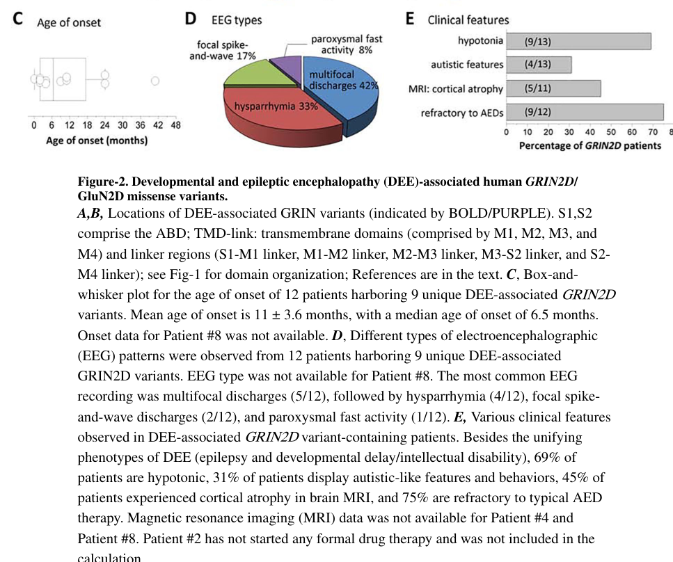

Developmental and epileptic encephalopathy 46 (DEE46) is an ultra-rare Mendelian neurodevelopmental disorder caused by heterozygous, usually de novo, missense variants in GRIN2D, which encodes the GluN2D subunit of the N-methyl-D-aspartate (NMDA) glutamate receptor. It presents in infancy with polymorphic, characteristically drug-resistant seizures — focal motor seizures, epileptic spasms, generalized seizures and status epilepticus — together with developmental delay or intellectual disability, hypotonia, movement abnormalities and cerebral visual impairment. The entry is organized around the mechanistic branch point that distinguishes DEE46 from a generic developmental and epileptic encephalopathy. Pathogenic GRIN2D variants cluster in the M3 gating helix and adjacent transmembrane regions, and their functional consequences are not uniform. The recurrent M3-domain c.1999G>A (p.Val667Ile) allele is a demonstrated gain-of-function variant: it raises glutamate and glycine potency, increases channel open probability roughly six-fold, reduces inhibition by endogenous protons and prolongs deactivation after glutamate removal, so each receptor activation passes more cation and more calcium for longer. In cultured neurons that excess receptor activity produces dendritic swelling and cell death. Other alleles behave differently — every variant tested in the largest functional series reduced receptor surface expression, and several reduced rather than increased channel opening — so surface-expression loss and channel gain-of-function are separate axes and a variant's position alone does not predict its functional direction. That branch is therapeutically load-bearing rather than academic. Because the p.Val667Ile receptor is overactive and retains sensitivity to open-channel blockade, NMDA-receptor antagonists have been used off-label as mechanism-directed therapy: oral memantine in the two index children, and ketamine with magnesium for refractory status epilepticus. Responses are inconsistent — three individuals carrying the identical p.Val667Ile variant had opposite memantine outcomes in a multicentre GRIN series — and the evidence base is case reports and small open-label series, not controlled trials. Loss-of-function alleles invert the therapeutic logic and are the target of a separate co-agonist (L-serine) strategy that is currently in trial rather than established, which is why this entry models the two branches as distinct pathophysiology nodes rather than merging them into one "altered NMDA receptor function" step.
Ask a research question about Developmental And Epileptic Encephalopathy 46. OpenScientist will conduct autonomous deep research using the Disorder Mechanisms Knowledge Base and PubMed literature (typically 10-30 minutes).
Do not include personal health information in your question. Questions and results are cached in your browser's local storage.
name: Developmental And Epileptic Encephalopathy 46
creation_date: "2026-09-04T02:26:58Z"
category: Mendelian
synonyms:
- DEE46
- EIEE46
- GRIN2D-related developmental and epileptic encephalopathy
- GRIN2D-related DEE
- epileptic encephalopathy, early infantile, 46
- GluN2D-related developmental and epileptic encephalopathy
description: >-
Developmental and epileptic encephalopathy 46 (DEE46) is an ultra-rare
Mendelian neurodevelopmental disorder caused by heterozygous, usually de novo,
missense variants in GRIN2D, which encodes the GluN2D subunit of the
N-methyl-D-aspartate (NMDA) glutamate receptor. It presents in infancy with
polymorphic, characteristically drug-resistant seizures — focal motor seizures,
epileptic spasms, generalized seizures and status epilepticus — together with
developmental delay or intellectual disability, hypotonia, movement
abnormalities and cerebral visual impairment.
The entry is organized around the mechanistic branch point that distinguishes
DEE46 from a generic developmental and epileptic encephalopathy. Pathogenic
GRIN2D variants cluster in the M3 gating helix and adjacent transmembrane
regions, and their functional consequences are not uniform. The recurrent
M3-domain c.1999G>A (p.Val667Ile) allele is a demonstrated gain-of-function
variant: it raises glutamate and glycine potency, increases channel open
probability roughly six-fold, reduces inhibition by endogenous protons and
prolongs deactivation after glutamate removal, so each receptor activation
passes more cation and more calcium for longer. In cultured neurons that
excess receptor activity produces dendritic swelling and cell death. Other
alleles behave differently — every variant tested in the largest functional
series reduced receptor surface expression, and several reduced rather than
increased channel opening — so surface-expression loss and channel
gain-of-function are separate axes and a variant's position alone does not
predict its functional direction.
That branch is therapeutically load-bearing rather than academic. Because the
p.Val667Ile receptor is overactive and retains sensitivity to open-channel
blockade, NMDA-receptor antagonists have been used off-label as
mechanism-directed therapy: oral memantine in the two index children, and
ketamine with magnesium for refractory status epilepticus. Responses are
inconsistent — three individuals carrying the identical p.Val667Ile variant
had opposite memantine outcomes in a multicentre GRIN series — and the
evidence base is case reports and small open-label series, not controlled
trials. Loss-of-function alleles invert the therapeutic logic and are the
target of a separate co-agonist (L-serine) strategy that is currently in
trial rather than established, which is why this entry models the two branches
as distinct pathophysiology nodes rather than merging them into one "altered
NMDA receptor function" step.
disease_term:
preferred_term: developmental and epileptic encephalopathy, 46
term:
id: MONDO:0014947
label: developmental and epileptic encephalopathy, 46
parents:
- Neurodevelopmental Disorder
- Genetic Disease
categories:
- Developmental and epileptic encephalopathy
- GRIN-related disorder
- Channelopathy
references:
- reference: PMID:35914066
title: "GRIN2D-Related Developmental and Epileptic Encephalopathy."
tags:
- GeneReviews
notes: >-
Curation provenance and caveats.
(1) GeneReviews. The GRIN2D GeneReviews chapter (PMID:35914066) is tagged in
`references:` above and is mined for evidence throughout this entry. Its cached
record carries `content_type: abstract_only`, but that field records how the
record was fetched, not whether it has quotable content: the `## Content`
section holds the chapter's complete four-section summary — Clinical
Characteristics, Diagnosis/Testing, Management and Genetic Counseling — in full
sentences. Evidence items quoting it support the tone, movement, autism,
cerebral visual impairment, sleep and feeding phenotypes; the molecular genetic
testing diagnosis; multidisciplinary supportive care; the reported-case count
under `prevalence`; and the 1% sib recurrence risk under the autosomal dominant
inheritance block. An earlier version of this note asserted that the chapter
could not be quoted and gave that as the reason those features were omitted.
That assertion was wrong — the same `abstract_only` label sits on PMID:31918992,
which this entry already quotes five times — and the omission it justified has
been repaired (PR #10899 review).
(2) Deep-research report corrections. This entry was curated against
`research/Developmental_And_Epileptic_Encephalopathy_46-deep-research-falcon.md`.
Every ontology CURIE the report proposed was re-derived against OLS before
use. Four report-proposed bindings were wrong and were corrected:
`HP:0002063` was offered as "drug-resistant epilepsy" but is actually
*Rigidity* (replaced with `HP:0020174` Refractory drug response, the binding
already used elsewhere in this KB for the same concept); `HP:0002069` was
labelled "generalized tonic-clonic seizure" but its canonical label is
*Bilateral tonic-clonic seizure*; `HP:0002079` was labelled "thin corpus
callosum" but is *Hypoplasia of the corpus callosum* (not curated here, as no
cached source documents it); `HP:0000733` was labelled "stereotypy" but is
*Motor stereotypy*. `HP:0100704` was labelled "cortical visual impairment"
against the canonical *Cerebral visual impairment*. The report's frontmatter
also carried `mondo_id: ''` (dismech#10335); `just preflight-dr` was run
manually against MONDO:0014947 and passed with GRIN2D mentioned 44 times.
(3) Clinical trials — the report is wrong here. The report states that "No
relevant GRIN2D-specific interventional trial was returned by the
ClinicalTrials.gov search" and that there is "no NCT identifier". A direct
ClinicalTrials.gov API search found three relevant interventional studies, two
of which name GRIN2D explicitly in their eligibility criteria or condition
list: NCT07224581 (Beeline, radiprodil, GoF variants in GRIN1/GRIN2A/GRIN2B/
GRIN2D), NCT07377032 (TAP-GRIN, L-serine, LoF variants in the same four genes)
and NCT05818943 (Honeycomb, radiprodil, GRIN GoF). All three are curated in
`clinical_trials` below.
(4) Unverifiable percentages deliberately omitted. The report carries cohort
frequencies (hypotonia 9/13, cerebral visual impairment 5/13, cortical atrophy
5/11, autism-spectrum features 4/13, multifocal discharges 5/12, hypsarrhythmia
4/12, median seizure onset 6.5 months, ~75% refractory) attributed to page
ranges of Camp & Yuan 2020 and XiangWei 2019. Those numbers are not present in
the cached abstracts of either paper, so none of them is curated as an
evidence-backed frequency. `frequency:` values on phenotypes below are the
coarse enum bands supportable from the quoted text, not those percentages. The
phenotypes those percentages describe are curated, sourced to the GeneReviews
statement that the disorder is characterized by them, and carry no `frequency:`
value. Two *treatments* are omitted for the same reason: the report attributes
vagus-nerve stimulation ("partial control in one patient") and ACTH for
epileptic spasms to those same page ranges, and neither term occurs anywhere in
the cached body of any of the seventeen references this entry cites — the
fourteen PubMed records and the three ClinicalTrials.gov records were each
grepped for "vagus", "VNS", "ACTH", "adrenocorticotrop" and "corticotropin",
with zero hits. Both are plausible interventions in an infantile spasms
phenotype, so this records a sourcing gap rather than a judgement that they are
not used; either becomes curatable as soon as a citable full text states it.
(5) Report sources not used. The report cites Kutluk & Randa 2021
(doi:10.30565/medalanya.891938) for several memantine dosing claims; that DOI
has no PubMed record and could not be resolved to a PMID, so it is not cited
here. Song et al. 2024 (PMID:37649269) is cited by the report in a
GRIN2D-adjacent context, but its cached full text contains zero occurrences of
"GRIN2D" — it tested GRIN1/GRIN2A/GRIN2B M2-loop variants — so it is not used
to support any GRIN2D claim. Kearney 2017 (PMID:28491004) cached as
`content_type: unavailable` and is likewise not quoted.
(6) Relationship to sibling entries. This entry is deliberately complementary
to `GRIN2B-Related_Developmental_and_Epileptic_Encephalopathy` (DEE27) rather
than a restatement of it: GluN2D has a distinct developmental expression
window and roughly ten-fold weaker magnesium block than GluN2A/GluN2B, GRIN2D
null variants have not been reported in humans (unlike GRIN2B, where
truncating alleles and whole-gene deletions are an established
loss-of-function route), and the GRIN2D disease-allele spectrum is dominated
by one recurrent M3 gain-of-function substitution.
mappings:
mondo_mappings:
- mapping_predicate: skos:exactMatch
term:
id: MONDO:0014947
label: developmental and epileptic encephalopathy, 46
inheritance:
- name: Autosomal dominant
description: >-
DEE46 results from a heterozygous GRIN2D variant that is characteristically
de novo; affected individuals are typically simplex cases with unaffected,
non-carrier parents. Recurrence risk to sibs of a simplex proband whose
variant is undetectable in either parent's leukocyte DNA is not zero: it is
quoted as 1%, on account of the theoretical possibility of parental germline
mosaicism.
inheritance_term:
preferred_term: Autosomal dominant inheritance
term:
id: HP:0000006
label: Autosomal dominant inheritance
evidence:
- reference: PMID:27616483
reference_title: "GRIN2D Recurrent De Novo Dominant Mutation Causes a Severe Epileptic Encephalopathy Treatable with NMDA Receptor Channel Blockers."
supports: SUPPORT
evidence_source: HUMAN_CLINICAL
snippet: "Here, we report a de novo recurrent heterozygous missense mutation-c.1999G>A (p.Val667Ile)-in a NMDAR gene previously unrecognized to harbor disease-causing mutations, GRIN2D, identified by exome and candidate panel sequencing in two unrelated children with epileptic encephalopathy."
explanation: >-
The founding report establishes the de novo heterozygous (autosomal
dominant) origin of the disease allele in two unrelated probands.
- reference: PMID:30280376
reference_title: "GRIN2D variants in three cases of developmental and epileptic encephalopathy."
supports: SUPPORT
evidence_source: HUMAN_CLINICAL
snippet: "In this study, we identified by whole exome sequencing novel heterozygous GRIN2D missense variants in three unrelated patients with severe developmental delay and intractable epilepsy."
explanation: >-
Independent confirmation that the causal alleles are heterozygous missense
variants in unrelated probands.
- reference: PMID:35914066
reference_title: "GRIN2D-Related Developmental and Epileptic Encephalopathy."
supports: SUPPORT
evidence_source: HUMAN_CLINICAL
snippet: "If the proband represents a simplex case (i.e., the only affected family member) and the GRIN2D pathogenic variant found in the proband cannot be detected in the leukocyte DNA of either parent, the recurrence risk to sibs is estimated to be 1% because of the theoretic possibility of parental mosaicism."
explanation: >-
Quantifies the residual sib recurrence risk that follows from the de novo,
autosomal dominant mechanism, and names parental mosaicism as its source.
pathophysiology:
- name: GRIN2D Missense Variant Altering the GluN2D NMDA Receptor Subunit
biological_scale: MOLECULAR
description: >-
The initiating lesion is a heterozygous, usually de novo, missense variant in
GRIN2D that substitutes a single residue in the GluN2D subunit of the NMDA
receptor. Reported disease alleles cluster in the M3 gating helix and the
adjacent pre-M1 and transmembrane regions, with a smaller set in the
intracellular carboxyl-terminal domain. Null (protein-truncating) GRIN2D
alleles have not been reported in affected individuals, so unlike GRIN2B this
disorder is not a haploinsufficiency syndrome.
cell_types:
- preferred_term: glutamatergic neuron
term:
id: CL:0000679
label: glutamatergic neuron
molecular_functions:
- preferred_term: NMDA glutamate receptor activity
term:
id: GO:0004972
label: NMDA glutamate receptor activity
modifier: ABNORMAL
evidence:
- reference: PMID:34560056
reference_title: "Clinical and therapeutic significance of genetic variation in the GRIN gene family encoding NMDARs."
supports: SUPPORT
evidence_source: HUMAN_CLINICAL
snippet: "GRIN2D missense variants have been observed in individuals with severe, drug-resistant epileptic encephalopathy with an early onset"
explanation: >-
Establishes missense GRIN2D variation as the causal lesion in
early-onset drug-resistant epileptic encephalopathy.
- reference: PMID:34560056
reference_title: "Clinical and therapeutic significance of genetic variation in the GRIN gene family encoding NMDARs."
supports: SUPPORT
evidence_source: HUMAN_CLINICAL
snippet: "Null variants in GRIN2D gene (other than large scale deletions) have not yet been reported."
explanation: >-
Supports restricting the initiating lesion to missense substitutions rather
than haploinsufficiency, which is what makes the gain-of-function branch
below the dominant mechanism.
- reference: PMID:41673952
reference_title: "GRIN2D-Related Developmental and Epileptic Encephalopathy Associated With Polymorphic Seizures Including Epileptic Spasms."
supports: SUPPORT
evidence_source: HUMAN_CLINICAL
snippet: "Whole-exome sequencing identified a de novo likely pathogenic variant in the GRIN2D gene, affecting one of the transmembrane domains (M3), which is essential for normal NMDAR function and harbours most of the pathogenic variants reported to date."
explanation: >-
Documents the clustering of pathogenic GRIN2D variants in the M3
transmembrane gating helix.
downstream:
- target: NMDA Receptor Gain-of-Function
causal_link_type: DIRECT
description: >-
A subset of missense substitutions, of which the recurrent M3-domain
p.Val667Ile allele is the best characterised, increases NMDA receptor
channel activity.
evidence:
- reference: PMID:27616483
reference_title: "GRIN2D Recurrent De Novo Dominant Mutation Causes a Severe Epileptic Encephalopathy Treatable with NMDA Receptor Channel Blockers."
supports: SUPPORT
evidence_source: IN_VITRO
snippet: "This gain-of-function mutation increases glutamate and glycine potency by 2-fold, increases channel open probability by 6-fold, and reduces receptor sensitivity to endogenous negative modulators such as extracellular protons."
explanation: >-
Heterologous-expression electrophysiology demonstrates that the recurrent
variant confers gain of channel function.
- target: Reduced GluN2D Receptor Surface Expression
causal_link_type: DIRECT
description: >-
Independently of their effect on channel gating, GRIN2D missense
substitutions impair delivery of assembled receptors to the cell surface.
evidence:
- reference: PMID:31504254
reference_title: "Heterogeneous clinical and functional features of GRIN2D-related developmental and epileptic encephalopathy."
supports: SUPPORT
evidence_source: IN_VITRO
snippet: "Functional analysis in vitro reveals that all six variants decreased receptor surface expression, which may underline some shared clinical symptoms."
explanation: >-
Every variant tested in the largest functional series reduced surface
expression, making this a shared consequence separate from gating.
- name: NMDA Receptor Gain-of-Function
biological_scale: MOLECULAR
conforms_to: "epilepsy_excitation_inhibition_imbalance#Ion Channel and Synaptic Dysfunction"
description: >-
In the gain-of-function branch the mutant GluN2D-containing receptor opens
more readily and stays open longer. For the recurrent p.Val667Ile allele this
is a combination of roughly two-fold higher glutamate and glycine potency, a
roughly six-fold increase in channel open probability, reduced inhibition by
endogenous extracellular protons, and a prolonged deactivation time course
after glutamate is removed — the last of which lengthens the synaptic
response itself. Other alleles reach the same endpoint by different
combinations: p.Leu670Phe and p.Ala678Asp raise open probability from a
wild-type value near 0.007 to 0.36 and 0.20 respectively, and p.Leu670Phe
slows deactivation and increases charge transfer.
genetic_context:
gene:
preferred_term: GRIN2D
term:
id: hgnc:4588
label: GRIN2D
allelic_events:
- MISSENSE_VARIANT
variant_origin: DE_NOVO
zygosity: HETEROZYGOUS
functional_impact_category: GAIN_OF_FUNCTION
description: >-
The recurrent de novo heterozygous M3-domain allele c.1999G>A
(p.Val667Ile), which is the GRIN2D variant whose gain of channel function
has actually been demonstrated by heterologous-expression
electrophysiology (higher agonist potency, ~6-fold higher open
probability, reduced proton inhibition, prolonged deactivation).
p.Leu670Phe and p.Ala678Asp reach the same functional endpoint. This
category applies to those alleles, not to GRIN2D missense variation as a
class — the sibling node records the alleles that decrease channel
function instead.
cell_types:
- preferred_term: glutamatergic neuron
term:
id: CL:0000679
label: glutamatergic neuron
molecular_functions:
- preferred_term: NMDA glutamate receptor activity
term:
id: GO:0004972
label: NMDA glutamate receptor activity
modifier: GAIN_OF_FUNCTION
biological_processes:
- preferred_term: regulation of membrane potential
term:
id: GO:0042391
label: regulation of membrane potential
modifier: ABNORMAL
evidence:
- reference: PMID:27616483
reference_title: "GRIN2D Recurrent De Novo Dominant Mutation Causes a Severe Epileptic Encephalopathy Treatable with NMDA Receptor Channel Blockers."
supports: SUPPORT
evidence_source: IN_VITRO
snippet: "Moreover, this mutation prolongs the deactivation time course after glutamate removal, which controls the synaptic time course."
explanation: >-
Prolonged deactivation lengthens the synaptic NMDA response, the kinetic
component of the gain of function.
- reference: PMID:31504254
reference_title: "Heterogeneous clinical and functional features of GRIN2D-related developmental and epileptic encephalopathy."
supports: SUPPORT
evidence_source: IN_VITRO
snippet: "In addition the GluN2D(Leu670Phe), (Ala675Thr) and (Ala678Asp) substitutions confer significantly enhanced agonist potency, and/or increased channel open probability, while the GluN2D(Ser573Phe), (Ser1271Phe) and (Arg1313Trp) substitutions result in a mild increase of agonist potency, reduced sensitivity to endogenous protons, and decreased channel open probability."
explanation: >-
Shows that gain of channel function is allele-specific rather than a
property of GRIN2D missense variation in general, which is the reason this
branch is modelled separately from the loss/mixed branch.
- reference: PMID:31504254
reference_title: "Heterogeneous clinical and functional features of GRIN2D-related developmental and epileptic encephalopathy."
supports: SUPPORT
evidence_source: IN_VITRO
snippet: "The GluN2D(Leu670Phe) variant slows current response deactivation time course and increased charge transfer."
explanation: >-
A second allele reproduces the slowed-deactivation, increased-charge-transfer
signature of the recurrent variant.
- reference: PMID:34560056
reference_title: "Clinical and therapeutic significance of genetic variation in the GRIN gene family encoding NMDARs."
supports: SUPPORT
evidence_source: IN_VITRO
snippet: "Functional analysis of variants introduced into GRIN2D cDNA have shown gain of function characteristics"
explanation: >-
Independent review statement that heterologous functional testing of GRIN2D
disease alleles shows gain of channel function.
- reference: PMID:40200555
reference_title: "Synaptic dysregulation in a mouse model of GRIN2D developmental and epileptic encephalopathy."
supports: SUPPORT
evidence_source: MODEL_ORGANISM
snippet: "Gain-of-function (GoF) variants in the GRIN2D gene, encoding the GluN2D subunit of the N-methyl-D-aspartate receptor (NMDAR), cause a severe developmental and epileptic encephalopathy (DEE) characterized by intractable seizures, hypotonia and neurodevelopmental delay."
explanation: >-
States the gain-of-function-to-DEE causal claim. Graded MODEL_ORGANISM
because the cited publication is a knock-in mouse study; the sentence is its
framing of the human disorder, not a human observation it reports.
downstream:
- target: Prolonged Excitatory Charge Transfer and Calcium Influx
causal_link_type: DIRECT
description: >-
Higher open probability and slower deactivation together pass more cation
current, including calcium, per receptor activation.
- name: Reduced GluN2D Receptor Surface Expression
biological_scale: CELLULAR
description: >-
A consequence shared across the tested GRIN2D disease alleles is reduced
delivery of GluN2D-containing receptors to the plasma membrane. This is a
distinct axis from channel gating: a variant may simultaneously reduce the
number of surface receptors and increase the activity of each one, so
"reduced surface expression" must not be read as net receptor loss of
function. Where reduced surface expression is not offset by increased
per-receptor activity it lowers current amplitude.
cell_types:
- preferred_term: glutamatergic neuron
term:
id: CL:0000679
label: glutamatergic neuron
cellular_components:
- preferred_term: NMDA selective glutamate receptor complex
term:
id: GO:0017146
label: NMDA selective glutamate receptor complex
modifier: DECREASED
evidence:
- reference: PMID:31504254
reference_title: "Heterogeneous clinical and functional features of GRIN2D-related developmental and epileptic encephalopathy."
supports: SUPPORT
evidence_source: IN_VITRO
snippet: "The GluN2D(Ser573Phe), (Ala675Thr), and (Ala678Asp) substitutions significantly decrease current amplitude, consistent with reduced surface expression."
explanation: >-
Links reduced surface expression to a measurable fall in current amplitude.
- reference: PMID:34560056
reference_title: "Clinical and therapeutic significance of genetic variation in the GRIN gene family encoding NMDARs."
supports: SUPPORT
evidence_source: IN_VITRO
snippet: "possibly with a compensatory reduced expression"
explanation: >-
The clause of the review sentence that bears on this node. It is hedged
("possibly") and is secondary to the direct current-amplitude measurement
quoted above from PMID:31504254, but it independently records reduced
expression as an observed accompaniment of GRIN2D disease alleles. The
earlier half of the same sentence reports gain of channel function and is
quoted on the gain-of-function node instead; quoting it here asserted the
opposite branch and was corrected in the PR #10899 review.
downstream:
- target: NMDA Receptor Loss-of-Function and Mixed Channel Dysfunction
causal_link_type: DIRECT
description: >-
Where the surface-expression deficit is not offset by increased channel
opening, net receptor signalling falls.
- name: NMDA Receptor Loss-of-Function and Mixed Channel Dysfunction
biological_scale: MOLECULAR
description: >-
The counterpart branch. Some GRIN2D alleles reduce rather than increase
channel open probability, and combine that with only a mild rise in agonist
potency and reduced proton sensitivity, so their net effect on receptor
signalling is a decrease or is genuinely mixed. This branch matters clinically
because it inverts the therapeutic logic of the gain-of-function branch: NMDA
open-channel blockade would be expected to deepen, not correct, hypofunction,
and the mechanism-directed strategy for these alleles is instead being tested
as co-agonist supplementation (L-serine, NCT07377032, still recruiting). That
is a trial hypothesis, not established practice — no controlled result exists,
and prescribing a co-agonist on a presumed loss-of-function classification is
neither validated nor known to be safe. Functional classification is
nonetheless a prerequisite for any mechanism-directed treatment here, not an
optional refinement.
cell_types:
- preferred_term: glutamatergic neuron
term:
id: CL:0000679
label: glutamatergic neuron
molecular_functions:
- preferred_term: NMDA glutamate receptor activity
term:
id: GO:0004972
label: NMDA glutamate receptor activity
modifier: DECREASED
evidence:
- reference: PMID:31504254
reference_title: "Heterogeneous clinical and functional features of GRIN2D-related developmental and epileptic encephalopathy."
supports: SUPPORT
evidence_source: IN_VITRO
snippet: "This work suggests the complexity of the pathological mechanisms of GRIN2D-mediated developmental and epileptic encephalopathy, as well as the potential benefit of precision medicine."
explanation: >-
The authors' own conclusion that GRIN2D pathomechanism is heterogeneous
rather than uniformly gain-of-function.
- reference: PMID:30280376
reference_title: "GRIN2D variants in three cases of developmental and epileptic encephalopathy."
supports: SUPPORT
evidence_source: HUMAN_CLINICAL
snippet: "Genetic diagnosis for GluN2-related disorders may be clinically useful when considering drug therapy targeting NMDA receptors."
explanation: >-
Motivates variant-level functional classification as the input to
NMDA-receptor-directed treatment selection.
- reference: clinicaltrials:NCT07377032
reference_title: "L-serine Supplementation in Patients With GRIN-related Neurodevelopmental Disorders: Multicentre Protocol for an Aggregated Series of Randomised, Placebo-controlled N-of-1 Trials"
supports: SUPPORT
evidence_source: HUMAN_CLINICAL
snippet: "The goal of this clinical study is to find out whether L-serine dietary supplementation helps improve overall clinical functioning in children and young adults (2-30 years) with GRIN-related neurodevelopmental disorders (GRIN-NDD) caused by loss-of-function (LoF) variants in GRIN1, GRIN2A, GRIN2B, or GRIN2D."
explanation: >-
The registration record for the co-agonist strategy named in this node's
description. It supports the claim in its softened form — that co-agonist
supplementation is under trial for loss-of-function GRIN2D alleles — and
not a claim that it is established therapy: the study is still recruiting
and is asking whether L-serine helps.
downstream:
- target: Disrupted Cortical Excitation-Inhibition Balance
causal_link_type: INDIRECT_UNKNOWN_INTERMEDIATES
description: >-
Reduced NMDA-receptor signalling in GluN2D-expressing populations is
proposed to disinhibit cortical networks, but the human causal step is
inferred rather than demonstrated.
- name: Prolonged Excitatory Charge Transfer and Calcium Influx
biological_scale: CELLULAR
conforms_to: "glutamate_excitotoxicity#Glutamate Receptor Overactivation and Calcium Overload"
description: >-
Because the mutant receptor opens more often and closes more slowly, each
activation passes a larger and longer-lasting cation current. NMDA receptors
are calcium permeable, so the excess charge transfer is also an excess
calcium load, and GluN2D-containing receptors are additionally subject to
substantially weaker voltage-dependent magnesium block than GluN2A- or
GluN2B-containing receptors, which removes part of the normal brake on that
influx.
cell_types:
- preferred_term: glutamatergic neuron
term:
id: CL:0000679
label: glutamatergic neuron
biological_processes:
- preferred_term: calcium ion transmembrane transport
term:
id: GO:0070588
label: calcium ion transmembrane transport
modifier: INCREASED
- preferred_term: synaptic transmission, glutamatergic
term:
id: GO:0035249
label: synaptic transmission, glutamatergic
modifier: INCREASED
evidence:
- reference: PMID:27616483
reference_title: "GRIN2D Recurrent De Novo Dominant Mutation Causes a Severe Epileptic Encephalopathy Treatable with NMDA Receptor Channel Blockers."
supports: SUPPORT
evidence_source: IN_VITRO
snippet: "N-methyl-D-aspartate receptors (NMDARs) are ligand-gated cation channels that mediate excitatory synaptic transmission."
explanation: >-
Establishes that the affected receptor is the cation-conducting channel
through which the excess charge passes.
- reference: PMID:31504254
reference_title: "Heterogeneous clinical and functional features of GRIN2D-related developmental and epileptic encephalopathy."
supports: SUPPORT
evidence_source: IN_VITRO
snippet: "N-methyl d-aspartate receptors are ligand-gated ionotropic receptors mediating a slow, calcium-permeable component of excitatory synaptic transmission in the CNS."
explanation: >-
Establishes the calcium permeability that makes prolonged receptor opening
a calcium load rather than only a depolarizing current. Graded IN_VITRO
like the paired biophysical quote above it: the receptor properties this
states are established by heterologous-expression electrophysiology, which
is also what this publication itself reports, and it is how this entry
grades every other quote from PMID:31504254.
downstream:
- target: Excitotoxic Neuronal Injury and Death
causal_link_type: DIRECT
description: >-
Sustained calcium entry through overactive receptors injures and kills
neurons in culture.
evidence:
- reference: PMID:27616483
reference_title: "GRIN2D Recurrent De Novo Dominant Mutation Causes a Severe Epileptic Encephalopathy Treatable with NMDA Receptor Channel Blockers."
supports: SUPPORT
evidence_source: IN_VITRO
snippet: "Transfection of cultured neurons with human GRIN2D cDNA harboring c.1999G>A leads to dendritic swelling and neuronal cell death, suggestive of excitotoxicity mediated by NMDAR over-activation."
explanation: >-
Directly demonstrates the receptor-overactivation-to-cell-death step for
the recurrent allele.
- target: Disrupted Cortical Excitation-Inhibition Balance
causal_link_type: DIRECT
description: >-
Excess and prolonged excitatory drive shifts the network balance toward
excitation during an early developmental window.
- name: Excitotoxic Neuronal Injury and Death
biological_scale: CELLULAR
conforms_to: "glutamate_excitotoxicity#Excitotoxic Neuronal Death"
description: >-
Neurons expressing the gain-of-function receptor undergo dendritic swelling
and die. This has been demonstrated for two alleles in rat cortical-neuron
culture — p.Val667Ile and p.Ala678Asp — and the death is preventable by
NMDA-receptor channel blockade, which is the pharmacological proof that the
receptor overactivity is the cause rather than a correlate. Extension of this
step to progressive neuronal loss in patients is a plausible inference and is
not directly demonstrated in human brain tissue.
cell_types:
- preferred_term: neuron
term:
id: CL:0000540
label: neuron
biological_processes:
- preferred_term: cell death
term:
id: GO:0008219
label: cell death
modifier: INCREASED
evidence:
- reference: PMID:31504254
reference_title: "Heterogeneous clinical and functional features of GRIN2D-related developmental and epileptic encephalopathy."
supports: SUPPORT
evidence_source: IN_VITRO
snippet: "GluN2D(Ala678Asp) transfection significantly decreased cell viability of rat cultured cortical neurons."
explanation: >-
A second, independently reported allele reproduces the loss of neuronal
viability seen with the recurrent variant.
downstream:
- target: Cerebral cortical atrophy
causal_link_type: INDIRECT_KNOWN_INTERMEDIATES
description: >-
Cumulative neuronal loss is the proposed substrate for the cortical atrophy
seen on imaging in a subset of patients. This link is inferential: the
cell-death evidence is from culture, not from human tissue.
- name: Disrupted Cortical Excitation-Inhibition Balance
biological_scale: TISSUE
conforms_to: "epilepsy_excitation_inhibition_imbalance#Excitation-Inhibition Imbalance"
description: >-
Both branches converge here. The decisive experimental result is that the
lesion is not simply "too much excitation in excitatory neurons": in a
knock-in mouse carrying the orthologue of the recurrent human variant,
restricting expression of the variant to GABAergic interneurons was
sufficient to reproduce the severe electroclinical phenotype, whereas
restricting it to excitatory forebrain neurons was not. GluN2D is enriched in
inhibitory interneurons, so altered NMDA-receptor function in the inhibitory
population is a prominent route to the network imbalance.
cell_types:
- preferred_term: GABAergic interneuron
term:
id: CL:0000617
label: GABAergic neuron
- preferred_term: glutamatergic neuron
term:
id: CL:0000679
label: glutamatergic neuron
biological_processes:
- preferred_term: regulation of synaptic transmission, glutamatergic
term:
id: GO:0051966
label: regulation of synaptic transmission, glutamatergic
modifier: ABNORMAL
evidence:
- reference: PMID:40200555
reference_title: "Synaptic dysregulation in a mouse model of GRIN2D developmental and epileptic encephalopathy."
supports: SUPPORT
evidence_source: MODEL_ORGANISM
snippet: "Notably, expression of V664I in GABAergic interneurons, but not excitatory forebrain neurons, is sufficient to recapitulate the severe electroclinical phenotype."
explanation: >-
Cell-type-restricted expression localizes the network-level lesion to the
inhibitory population.
- reference: PMID:40200555
reference_title: "Synaptic dysregulation in a mouse model of GRIN2D developmental and epileptic encephalopathy."
supports: SUPPORT
evidence_source: MODEL_ORGANISM
snippet: "Altogether, our studies show that altered NMDAR function in inhibitory neurons plays a prominent role in DEE associated with GRIN2D GoF variants, suggesting that targeted genetic treatment may represent a path forward to successful therapeutic intervention."
explanation: >-
The authors' own summary of the interneuron-centred mechanism.
downstream:
- target: Neuronal Hyperexcitability and Hypersynchronous Network Firing
causal_link_type: DIRECT
description: >-
A network biased toward excitation fires hyperexcitably and
hypersynchronously.
- name: Neuronal Hyperexcitability and Hypersynchronous Network Firing
biological_scale: TISSUE
conforms_to: "epilepsy_excitation_inhibition_imbalance#Neuronal Hyperexcitability and Hypersynchrony"
description: >-
The imbalanced network generates sustained, spatially distributed
epileptiform activity. In the knock-in mouse this appears as continuous
abnormal electrocorticographic activity with a distinctive narrowband
theta/alpha/beta spectral signature that parallels the EEG of a patient
carrying the same variant, and in adults as prolonged runs of spike-wave
discharge. In patients it appears as generalized or multifocal spike-wave and
spike-and-slow-wave discharges, hypsarrhythmia, and polymorphic clinical
seizures.
cell_types:
- preferred_term: neuron
term:
id: CL:0000540
label: neuron
biological_processes:
- preferred_term: excitatory postsynaptic potential
term:
id: GO:0060079
label: excitatory postsynaptic potential
modifier: INCREASED
evidence:
- reference: PMID:40277233
reference_title: "A mouse model of GRIN2D developmental and epileptic encephalopathy recapitulates the human disease."
supports: SUPPORT
evidence_source: MODEL_ORGANISM
snippet: "ECoG recordings demonstrated profound and continuous abnormal brain activity, with altered spectral properties and a prominent narrowband activity in the theta, alpha and beta bands, paralleling the patterns seen in a patient with the same GRIN2D pathogenic variant."
explanation: >-
Cross-species correspondence between the mouse network activity and a
patient recording carrying the same variant.
- reference: PMID:40200555
reference_title: "Synaptic dysregulation in a mouse model of GRIN2D developmental and epileptic encephalopathy."
supports: SUPPORT
evidence_source: MODEL_ORGANISM
snippet: "As adults, heterozygotes display abundant and prolonged runs of spike-wave discharges (SWD) that often persist for minutes."
explanation: >-
Documents sustained hypersynchronous discharge in the variant-carrying
network.
downstream:
- target: Drug-Resistant Epilepsy
causal_link_type: DIRECT
description: >-
Sustained network hyperexcitability produces the polymorphic seizures
that define the epilepsy component, and their resistance to conventional
antiseizure medication.
- target: Focal motor seizures
causal_link_type: DIRECT
description: >-
Focal-onset seizures with motor features are among the seizure types
generated by the hyperexcitable network.
- target: Generalized-onset seizures
causal_link_type: DIRECT
description: >-
Generalized-onset seizures occur in the same children, which is what makes
the seizure repertoire polymorphic.
- target: Epileptic spasms
causal_link_type: DIRECT
description: >-
Epileptic spasms, with or without hypsarrhythmia, are among the seizure
types generated.
- target: Hypsarrhythmia
causal_link_type: DIRECT
- target: Status epilepticus
causal_link_type: DIRECT
- target: Multifocal Epileptiform EEG Abnormality
causal_link_type: DIRECT
- target: Impaired Activity-Dependent Synaptic Maturation
causal_link_type: INDIRECT_KNOWN_INTERMEDIATES
description: >-
Recurrent epileptiform activity during infancy compounds the primary
receptor defect in disrupting circuit development — the "epileptic" half of
developmental and epileptic encephalopathy.
- name: Impaired Activity-Dependent Synaptic Maturation
biological_scale: CELLULAR
description: >-
NMDA-receptor signalling is the substrate of activity-dependent synapse
maturation and plasticity, and GluN2D expression peaks early in development.
Both the primary receptor defect and the superimposed epileptiform activity
therefore act on circuit formation during the window in which it happens.
Structural correlates are visible in the mouse model as enlarged presynaptic
terminals and increased synaptic distance. This node is the reason seizure
control alone does not reverse the developmental impairment.
cell_types:
- preferred_term: glutamatergic neuron
term:
id: CL:0000679
label: glutamatergic neuron
biological_processes:
- preferred_term: chemical synaptic transmission
term:
id: GO:0007268
label: chemical synaptic transmission
modifier: ABNORMAL
evidence:
- reference: PMID:40200555
reference_title: "Synaptic dysregulation in a mouse model of GRIN2D developmental and epileptic encephalopathy."
supports: SUPPORT
evidence_source: MODEL_ORGANISM
snippet: "V664I mutant neurons have enlarged presynaptic terminals and increased synaptic distance."
explanation: >-
A structural synaptic abnormality in neurons carrying the orthologous
gain-of-function variant.
- reference: PMID:31918992
reference_title: "GRIN2D/GluN2D NMDA receptor: unique features and its contribution to pediatric developmental and epileptic encephalopathy."
supports: SUPPORT
evidence_source: HUMAN_CLINICAL
snippet: "N-methyl-d-aspartate receptors (NMDARs), a subset of ligand-gated ionotropic glutamate receptors, are critical for learning, memory, and neuronal development."
explanation: >-
Establishes the developmental role of the receptor whose function is
altered, linking the molecular lesion to a developmental outcome.
downstream:
- target: Global developmental delay
causal_link_type: DIRECT
- target: Intellectual disability
causal_link_type: DIRECT
- target: Hypotonia
causal_link_type: INDIRECT_UNKNOWN_INTERMEDIATES
- target: Spasticity
causal_link_type: INDIRECT_UNKNOWN_INTERMEDIATES
description: >-
The hypertonic pole of the same tone abnormality, routed through this node
for the same reason hypotonia is: no intermediate step between disordered
circuit maturation and the resulting tone state is established.
- target: Movement disorder
causal_link_type: INDIRECT_UNKNOWN_INTERMEDIATES
- target: Dystonia
causal_link_type: INDIRECT_UNKNOWN_INTERMEDIATES
- target: Chorea
causal_link_type: INDIRECT_UNKNOWN_INTERMEDIATES
- target: Autistic behavior
causal_link_type: INDIRECT_UNKNOWN_INTERMEDIATES
- target: Cerebral visual impairment
causal_link_type: INDIRECT_UNKNOWN_INTERMEDIATES
description: >-
Cortical rather than ocular visual failure, so it sits downstream of the
cortical outcome nodes rather than of any ocular lesion.
- target: Sleep disturbance
causal_link_type: INDIRECT_UNKNOWN_INTERMEDIATES
- target: Feeding difficulties
causal_link_type: INDIRECT_UNKNOWN_INTERMEDIATES
phenotypes:
- name: Drug-Resistant Epilepsy
category: Neurologic
description: >-
The defining clinical problem. Seizures begin in infancy and are
characteristically refractory to conventional antiseizure medication.
Reported regimens have included phenobarbital, midazolam, levetiracetam,
clonazepam, clobazam, topiramate, vigabatrin, valproate, corticosteroids and
the ketogenic diet, singly and in combination, with most patients achieving
at best partial control.
frequency: VERY_FREQUENT
phenotype_term:
preferred_term: Drug-resistant epilepsy
term:
id: HP:0020174
label: Refractory drug response
onset:
onset_category: INFANTILE
evidence:
- reference: PMID:31918992
reference_title: "GRIN2D/GluN2D NMDA receptor: unique features and its contribution to pediatric developmental and epileptic encephalopathy."
supports: SUPPORT
evidence_source: HUMAN_CLINICAL
snippet: "Importantly, patients with GRIN2D variants are largely refractory to conventional anti-epileptic drug (AED) treatment, highlighting the need to further understand the distinctive characteristics of GluN2D in neurological and pathological functions."
explanation: >-
Directly states that drug resistance is the characteristic treatment
response in GRIN2D-related disease.
- reference: PMID:33397303
reference_title: "Identification of a novel GRIN2D variant in a neonate with intractable epileptic encephalopathy-a case report."
supports: SUPPORT
evidence_source: HUMAN_CLINICAL
snippet: "These data suggest the majority of patients with GRIN2D mutations are refractory to multiple anti-epileptic medications."
explanation: >-
A literature synthesis across the reported cases reaching the same
conclusion.
- reference: PMID:41673952
reference_title: "GRIN2D-Related Developmental and Epileptic Encephalopathy Associated With Polymorphic Seizures Including Epileptic Spasms."
supports: SUPPORT
evidence_source: HUMAN_CLINICAL
snippet: "The patient showed developmental delay, resistance to antiseizure medications and frequent, multiple seizure types-including motor focal seizures, epileptic spasms with and without hypsarrhythmia and generalized seizures-together with abnormal movements and EEG findings consistent with epileptic encephalopathy."
explanation: >-
A recent individual case documenting the drug-resistant, polymorphic
seizure pattern.
- name: Focal motor seizures
category: Neurologic
description: >-
Seizures with focal onset and motor features are one of the polymorphic
seizure types of GRIN2D-related DEE. In the most recently reported case they
began at two months of age as afebrile focal-to-generalized tonic seizures
with focal EEG activity, and persisted alongside epileptic spasms and
generalized-onset seizures in the same child.
phenotype_term:
preferred_term: Focal motor seizures
term:
id: HP:0011153
label: Focal motor seizure
onset:
onset_category: INFANTILE
evidence:
- reference: PMID:41673952
reference_title: "GRIN2D-Related Developmental and Epileptic Encephalopathy Associated With Polymorphic Seizures Including Epileptic Spasms."
supports: SUPPORT
evidence_source: HUMAN_CLINICAL
snippet: "frequent, multiple seizure types-including motor focal seizures, epileptic spasms with and without hypsarrhythmia and generalized seizures"
explanation: >-
Names motor focal seizures among the seizure types recorded in a
molecularly confirmed GRIN2D case.
- reference: PMID:41673952
reference_title: "GRIN2D-Related Developmental and Epileptic Encephalopathy Associated With Polymorphic Seizures Including Epileptic Spasms."
supports: SUPPORT
evidence_source: HUMAN_CLINICAL
snippet: "began at 2 months of age with afebrile focal-to-generalized tonic seizures and focal activity on electroencephalography (EEG)"
explanation: >-
Dates the focal seizure onset to infancy and records the accompanying focal
electrographic activity.
- name: Generalized-onset seizures
category: Neurologic
description: >-
Generalized seizures occur in the same children as focal motor seizures and
epileptic spasms, which is what makes the epilepsy of GRIN2D-related DEE
polymorphic rather than a single seizure syndrome. The cited case describes
them only as generalized, without specifying a semiology, so this entry binds
the generalized-onset level and does not assert a tonic-clonic subtype.
phenotype_term:
preferred_term: Generalized seizures
term:
id: HP:0002197
label: Generalized-onset seizure
onset:
onset_category: INFANTILE
evidence:
- reference: PMID:41673952
reference_title: "GRIN2D-Related Developmental and Epileptic Encephalopathy Associated With Polymorphic Seizures Including Epileptic Spasms."
supports: SUPPORT
evidence_source: HUMAN_CLINICAL
snippet: "frequent, multiple seizure types-including motor focal seizures, epileptic spasms with and without hypsarrhythmia and generalized seizures"
explanation: >-
Names generalized seizures among the seizure types recorded in a
molecularly confirmed GRIN2D case.
notes: >-
Bound to HP:0002197 (Generalized-onset seizure) rather than HP:0002069
(Bilateral tonic-clonic seizure): the source says only "generalized
seizures", so a tonic-clonic binding would assert a semiology the cited case
does not report.
- name: Epileptic spasms
category: Neurologic
description: >-
Epileptic spasms, occurring with or without hypsarrhythmia, are among the
seizure types seen in GRIN2D-related DEE and may coexist with focal motor and
generalized seizures in the same child.
phenotype_term:
preferred_term: Epileptic spasms
term:
id: HP:0012469
label: Infantile spasms
onset:
onset_category: INFANTILE
evidence:
- reference: PMID:41673952
reference_title: "GRIN2D-Related Developmental and Epileptic Encephalopathy Associated With Polymorphic Seizures Including Epileptic Spasms."
supports: SUPPORT
evidence_source: HUMAN_CLINICAL
snippet: "epileptic spasms with and without hypsarrhythmia"
explanation: >-
Documents epileptic spasms in a molecularly confirmed GRIN2D case.
notes: >-
Bound to HP:0012469, whose canonical label is "Infantile spasms"; the
`preferred_term` records the current ILAE terminology used by the cited
report.
- name: Hypsarrhythmia
category: Neurologic
description: >-
Hypsarrhythmia — the chaotic high-amplitude interictal EEG pattern associated
with epileptic spasms — has been recorded in GRIN2D-related DEE, in one
neonate as continuous generalized or multifocal spike-wave and
spike-and-slow-wave discharge.
phenotype_term:
preferred_term: Hypsarrhythmia
term:
id: HP:0002521
label: Hypsarrhythmia
evidence:
- reference: PMID:33397303
reference_title: "Identification of a novel GRIN2D variant in a neonate with intractable epileptic encephalopathy-a case report."
supports: SUPPORT
evidence_source: HUMAN_CLINICAL
snippet: "Video electroencephalogram showed continuous, generalized or multi-focal spike-wave and spike-and-slow wave discharges and hypsarrhythmia."
explanation: >-
Direct EEG documentation of hypsarrhythmia in a GRIN2D neonate.
- name: Multifocal Epileptiform EEG Abnormality
category: Neurologic
description: >-
Interictal EEG shows generalized or multifocal spike-wave and
spike-and-slow-wave discharge. Prolonged or serial video EEG is clinically
important because the electrographic burden can exceed the visible clinical
seizure burden.
phenotype_term:
preferred_term: Multifocal epileptiform discharges
term:
id: HP:0010841
label: Multifocal epileptiform discharges
evidence:
- reference: PMID:33397303
reference_title: "Identification of a novel GRIN2D variant in a neonate with intractable epileptic encephalopathy-a case report."
supports: SUPPORT
evidence_source: HUMAN_CLINICAL
snippet: "Electroencephalogram of the patient. Intermittent or continuous discharges (hypsarrhythmia) of generalized or multi-focal spike-waves and spike-and-slow waves were recorded by electroencephalography"
explanation: >-
Records the generalized/multifocal epileptiform pattern.
- name: Status epilepticus
category: Neurologic
description: >-
Refractory status epilepticus has been reported in a patient carrying the
recurrent p.Val667Ile allele, and was the clinical setting in which
NMDA-receptor-directed rescue therapy (ketamine plus magnesium) was first
used in this disorder.
phenotype_term:
preferred_term: Status epilepticus
term:
id: HP:0002133
label: Status epilepticus
evidence:
- reference: PMID:27616483
reference_title: "GRIN2D Recurrent De Novo Dominant Mutation Causes a Severe Epileptic Encephalopathy Treatable with NMDA Receptor Channel Blockers."
supports: SUPPORT
evidence_source: HUMAN_CLINICAL
snippet: "The older proband subsequently developed refractory status epilepticus, with dramatic electroclinical improvement upon treatment with ketamine and magnesium."
explanation: >-
Documents refractory status epilepticus as a manifestation.
- name: Global developmental delay
category: Neurologic
description: >-
Developmental delay accompanies the epilepsy and is part of the defining
picture rather than an occasional complication. It is present across the
reported cases and ranges from substantial delay to profound impairment.
frequency: VERY_FREQUENT
phenotype_term:
preferred_term: Global developmental delay
term:
id: HP:0001263
label: Global developmental delay
onset:
onset_category: INFANTILE
evidence:
- reference: PMID:30280376
reference_title: "GRIN2D variants in three cases of developmental and epileptic encephalopathy."
supports: SUPPORT
evidence_source: HUMAN_CLINICAL
snippet: "In this study, we identified by whole exome sequencing novel heterozygous GRIN2D missense variants in three unrelated patients with severe developmental delay and intractable epilepsy."
explanation: >-
Severe developmental delay in all three molecularly confirmed patients.
- reference: PMID:40277233
reference_title: "A mouse model of GRIN2D developmental and epileptic encephalopathy recapitulates the human disease."
supports: SUPPORT
evidence_source: MODEL_ORGANISM
snippet: "the recurrent missense mutation c.1999G>A (p.Val667Ile) that was discovered in at least four unrelated children presenting with early-onset epileptic encephalopathy associated with severe developmental delay and movement disorder"
explanation: >-
Describes the human phenotype associated with the recurrent allele. Graded
MODEL_ORGANISM because the cited publication is a knock-in mouse study; the
human clinical support for this phenotype is PMID:30280376 above.
- name: Intellectual disability
category: Neurologic
description: >-
The developmental impairment persists into established intellectual
disability. Severity is variable but frequently severe or profound, and
developmental recovery is typically incomplete even where seizures improve.
phenotype_term:
preferred_term: Intellectual disability
term:
id: HP:0001249
label: Intellectual disability
evidence:
- reference: PMID:32289570
reference_title: "Immunotherapy for GRIN2A and GRIN2D-related epileptic encephalopathy."
supports: SUPPORT
evidence_source: HUMAN_CLINICAL
snippet: "All patients had global developmental delay/ intellectual disability in various degrees, and were resistant to anticonvulsants, but none of the patients had frequent clinical seizures."
explanation: >-
A GRIN-related epileptic encephalopathy series including a GRIN2D patient,
documenting developmental delay/intellectual disability of variable degree.
- name: Hypotonia
category: Neurologic
description: >-
Abnormal muscle tone is part of the core phenotype, and GeneReviews describes
it as spanning both directions — hypotonia and spasticity — rather than as
hypotonia alone. Hypotonia is the pattern named in the gain-of-function cases
summarized in the mouse-model literature; the spastic pole is curated
separately below.
phenotype_term:
preferred_term: Hypotonia
term:
id: HP:0001252
label: Hypotonia
evidence:
- reference: PMID:35914066
reference_title: "GRIN2D-Related Developmental and Epileptic Encephalopathy."
supports: SUPPORT
evidence_source: HUMAN_CLINICAL
snippet: "GRIN2D-related developmental and epileptic encephalopathy (GRIN2D-related DEE) is characterized by mild-to-profound developmental delay or intellectual disability, epilepsy, abnormal muscle tone (hypotonia and spasticity), movement disorders (dystonia, dyskinesia, chorea), autism spectrum disorder, and cortical visual impairment."
explanation: >-
The GeneReviews clinical-characteristics statement, which names abnormal
muscle tone with hypotonia as a defining feature of the human disorder.
- reference: PMID:40200555
reference_title: "Synaptic dysregulation in a mouse model of GRIN2D developmental and epileptic encephalopathy."
supports: SUPPORT
evidence_source: MODEL_ORGANISM
snippet: "Gain-of-function (GoF) variants in the GRIN2D gene, encoding the GluN2D subunit of the N-methyl-D-aspartate receptor (NMDAR), cause a severe developmental and epileptic encephalopathy (DEE) characterized by intractable seizures, hypotonia and neurodevelopmental delay."
explanation: >-
Names hypotonia as one of the three characterizing features. Graded
MODEL_ORGANISM because the cited publication is a knock-in mouse study;
it is corroborating, not the human source, which is the GeneReviews item
above.
notes: >-
A hypertonic neonatal presentation is also on record (PMID:33397303,
"stiffness of the lower and upper extremities since birth ... hypertonia of
limbs"). Tone abnormality in either direction, rather than hypotonia
specifically, is the stable feature.
- name: Movement disorder
category: Neurologic
description: >-
Abnormal movements accompany the epilepsy and developmental impairment. The
literature describes them with the recurrent p.Val667Ile allele, and a recent
case reports abnormal movements alongside the polymorphic seizure pattern.
This node is the umbrella; the individual phenomenology GeneReviews names —
dystonia, dyskinesia and chorea — is curated below, with dyskinesia left
inside this umbrella because the source does not distinguish it from the
other two.
phenotype_term:
preferred_term: Movement disorder
term:
id: HP:0100022
label: Abnormality of movement
evidence:
- reference: PMID:35914066
reference_title: "GRIN2D-Related Developmental and Epileptic Encephalopathy."
supports: SUPPORT
evidence_source: HUMAN_CLINICAL
snippet: "GRIN2D-related developmental and epileptic encephalopathy (GRIN2D-related DEE) is characterized by mild-to-profound developmental delay or intellectual disability, epilepsy, abnormal muscle tone (hypotonia and spasticity), movement disorders (dystonia, dyskinesia, chorea), autism spectrum disorder, and cortical visual impairment."
explanation: >-
GeneReviews lists movement disorders among the defining features and names
their phenomenology.
- reference: PMID:40277233
reference_title: "A mouse model of GRIN2D developmental and epileptic encephalopathy recapitulates the human disease."
supports: SUPPORT
evidence_source: MODEL_ORGANISM
snippet: "presenting with early-onset epileptic encephalopathy associated with severe developmental delay and movement disorder"
explanation: >-
Names movement disorder as part of the presentation of the recurrent
variant. Graded MODEL_ORGANISM because the cited publication is a knock-in
mouse study; the human source for this phenotype is the GeneReviews item
above.
- name: Spasticity
category: Neurologic
description: >-
The hypertonic pole of the tone abnormality. GeneReviews describes abnormal
muscle tone in GRIN2D-related DEE as encompassing spasticity as well as
hypotonia, and a hypertonic neonatal presentation with limb stiffness from
birth is on record in an individual case.
phenotype_term:
preferred_term: Spasticity
term:
id: HP:0001257
label: Spasticity
evidence:
- reference: PMID:35914066
reference_title: "GRIN2D-Related Developmental and Epileptic Encephalopathy."
supports: SUPPORT
evidence_source: HUMAN_CLINICAL
snippet: "GRIN2D-related developmental and epileptic encephalopathy (GRIN2D-related DEE) is characterized by mild-to-profound developmental delay or intellectual disability, epilepsy, abnormal muscle tone (hypotonia and spasticity), movement disorders (dystonia, dyskinesia, chorea), autism spectrum disorder, and cortical visual impairment."
explanation: >-
Names spasticity as one of the two directions the characteristic tone
abnormality takes.
notes: >-
Curated as a distinct phenotype from `Hypotonia` because the two are opposite
tone states rather than degrees of one; GeneReviews reports both under
"abnormal muscle tone" without saying how the reported individuals divide
between them, so neither carries a `frequency:` value.
- name: Dystonia
category: Neurologic
description: >-
Dystonia is one of the named movement phenomenologies in GRIN2D-related DEE.
phenotype_term:
preferred_term: Dystonia
term:
id: HP:0001332
label: Dystonia
evidence:
- reference: PMID:35914066
reference_title: "GRIN2D-Related Developmental and Epileptic Encephalopathy."
supports: SUPPORT
evidence_source: HUMAN_CLINICAL
snippet: "GRIN2D-related developmental and epileptic encephalopathy (GRIN2D-related DEE) is characterized by mild-to-profound developmental delay or intellectual disability, epilepsy, abnormal muscle tone (hypotonia and spasticity), movement disorders (dystonia, dyskinesia, chorea), autism spectrum disorder, and cortical visual impairment."
explanation: >-
GeneReviews names dystonia among the movement disorders characterizing the
condition.
- name: Chorea
category: Neurologic
description: >-
Chorea is one of the named movement phenomenologies in GRIN2D-related DEE.
phenotype_term:
preferred_term: Chorea
term:
id: HP:0002072
label: Chorea
evidence:
- reference: PMID:35914066
reference_title: "GRIN2D-Related Developmental and Epileptic Encephalopathy."
supports: SUPPORT
evidence_source: HUMAN_CLINICAL
snippet: "GRIN2D-related developmental and epileptic encephalopathy (GRIN2D-related DEE) is characterized by mild-to-profound developmental delay or intellectual disability, epilepsy, abnormal muscle tone (hypotonia and spasticity), movement disorders (dystonia, dyskinesia, chorea), autism spectrum disorder, and cortical visual impairment."
explanation: >-
GeneReviews names chorea among the movement disorders characterizing the
condition.
- name: Autistic behavior
category: Behavioral
description: >-
Autism spectrum disorder is part of the neurobehavioural phenotype and is not
reducible to the global developmental impairment: GeneReviews lists it
alongside, rather than within, developmental delay and intellectual
disability.
phenotype_term:
preferred_term: Autism spectrum disorder
term:
id: HP:0000729
label: Autistic behavior
evidence:
- reference: PMID:35914066
reference_title: "GRIN2D-Related Developmental and Epileptic Encephalopathy."
supports: SUPPORT
evidence_source: HUMAN_CLINICAL
snippet: "GRIN2D-related developmental and epileptic encephalopathy (GRIN2D-related DEE) is characterized by mild-to-profound developmental delay or intellectual disability, epilepsy, abnormal muscle tone (hypotonia and spasticity), movement disorders (dystonia, dyskinesia, chorea), autism spectrum disorder, and cortical visual impairment."
explanation: >-
GeneReviews names autism spectrum disorder as a characterizing feature.
notes: >-
Bound to HP:0000729, whose canonical label is "Autistic behavior"; the
`preferred_term` records the diagnostic term the source uses.
- name: Cerebral visual impairment
category: Ophthalmologic
description: >-
Visual impairment of cortical rather than ocular origin, listed by
GeneReviews as "cortical visual impairment". It is the visual counterpart of
the cortical injury modelled elsewhere in this entry, and it is what makes
ophthalmology part of the supportive-care team.
phenotype_term:
preferred_term: Cortical visual impairment
term:
id: HP:0100704
label: Cerebral visual impairment
evidence:
- reference: PMID:35914066
reference_title: "GRIN2D-Related Developmental and Epileptic Encephalopathy."
supports: SUPPORT
evidence_source: HUMAN_CLINICAL
snippet: "GRIN2D-related developmental and epileptic encephalopathy (GRIN2D-related DEE) is characterized by mild-to-profound developmental delay or intellectual disability, epilepsy, abnormal muscle tone (hypotonia and spasticity), movement disorders (dystonia, dyskinesia, chorea), autism spectrum disorder, and cortical visual impairment."
explanation: >-
GeneReviews names cortical visual impairment as a characterizing feature.
notes: >-
Bound to HP:0100704, whose canonical label is "Cerebral visual impairment";
"cortical visual impairment" is the wording the source uses and is recorded
in `preferred_term`. This entry's `description` already asserted the finding
while the phenotype list omitted it; the omission was repaired in the PR
#10899 review.
- name: Sleep disturbance
category: Neurologic
description: >-
Sleep disorder is reported as an additional feature rather than a defining
one. It matters for management because it compounds the daytime seizure and
developmental burden and is separately treatable.
phenotype_term:
preferred_term: Sleep disorder
term:
id: HP:0002360
label: Sleep disturbance
evidence:
- reference: PMID:35914066
reference_title: "GRIN2D-Related Developmental and Epileptic Encephalopathy."
supports: SUPPORT
evidence_source: HUMAN_CLINICAL
snippet: "Additional findings can include sleep disorders and feeding difficulties."
explanation: >-
GeneReviews lists sleep disorders among the additional findings of the
condition.
- name: Feeding difficulties
category: Gastrointestinal
description: >-
Feeding difficulty is reported as an additional feature and drives a concrete
surveillance recommendation in infancy: regular assessment of swallowing,
feeding and nutritional status to decide between oral and gastrostomy
feeding.
phenotype_term:
preferred_term: Feeding difficulties
term:
id: HP:0011968
label: Feeding difficulties
evidence:
- reference: PMID:35914066
reference_title: "GRIN2D-Related Developmental and Epileptic Encephalopathy."
supports: SUPPORT
evidence_source: HUMAN_CLINICAL
snippet: "Additional findings can include sleep disorders and feeding difficulties."
explanation: >-
GeneReviews lists feeding difficulties among the additional findings of the
condition.
- reference: PMID:35914066
reference_title: "GRIN2D-Related Developmental and Epileptic Encephalopathy."
supports: SUPPORT
evidence_source: HUMAN_CLINICAL
snippet: "In infancy: regular assessment of swallowing, feeding, and nutritional status to determine safety of oral vs gastrostomy feeding."
explanation: >-
The surveillance recommendation that follows from the feeding difficulty,
and the reason it is curated as a phenotype rather than left in prose.
- name: Cerebral cortical atrophy
category: Neurologic
description: >-
Brain MRI may be normal, especially early, or may show cerebral/cortical
atrophy. This entry curates the atrophy as the endpoint of the excitotoxic
branch of the pathograph; frequency estimates circulating in secondary
sources could not be traced to a quotable primary statement and are not
recorded here.
phenotype_term:
preferred_term: Cerebral cortical atrophy
term:
id: HP:0002120
label: Cerebral cortical atrophy
evidence:
- reference: PMID:27616483
reference_title: "GRIN2D Recurrent De Novo Dominant Mutation Causes a Severe Epileptic Encephalopathy Treatable with NMDA Receptor Channel Blockers."
supports: SUPPORT
directness: INDIRECT
evidence_source: IN_VITRO
snippet: "Transfection of cultured neurons with human GRIN2D cDNA harboring c.1999G>A leads to dendritic swelling and neuronal cell death, suggestive of excitotoxicity mediated by NMDAR over-activation."
explanation: >-
Cited as the mechanistic basis for cortical volume loss, not as a direct
observation of atrophy in patients. Graded INDIRECT because the
demonstration is neuronal death in culture and the inference to human
cortical atrophy requires an additional step.
notes: >-
No cached reference in this entry reports the MRI finding itself with a
quotable sentence, so the phenotype is supported only by the mechanistic
inference above. Treat the imaging frequency as unknown.
genetic:
- name: GRIN2D
association: Causative
relationship_type: CAUSATIVE
variant_origin: GERMLINE
gene_term:
preferred_term: GRIN2D
term:
id: hgnc:4588
label: GRIN2D
notes: >-
Heterozygous missense variants, characteristically de novo. Reported disease
alleles include p.Asp449Asn, p.Ser573Phe, p.Thr674Lys, p.Ala675Val,
p.Val667Ile, p.Leu670Phe, p.Ala675Thr, p.Ala678Asp, p.Met681Ile, p.Ser694Arg,
p.Ser1271Leu and p.Arg1313Trp, clustering in the M3 gating helix and adjacent
transmembrane regions with a minority in the intracellular carboxyl-terminal
domain. c.1999G>A (p.Val667Ile) is the recurrent allele and is the one
demonstrated to be gain-of-function. Protein-truncating GRIN2D alleles have
not been reported in affected individuals, so haploinsufficiency is not an
established route to this phenotype and a truncating allele should not be
called causal on gene identity alone.
evidence:
- reference: PMID:27616483
reference_title: "GRIN2D Recurrent De Novo Dominant Mutation Causes a Severe Epileptic Encephalopathy Treatable with NMDA Receptor Channel Blockers."
supports: SUPPORT
evidence_source: HUMAN_CLINICAL
snippet: "The resulting GluN2D p.Val667Ile exchange occurs in the M3 transmembrane domain involved in channel gating."
explanation: >-
Locates the recurrent disease allele in the M3 gating helix.
- reference: PMID:33397303
reference_title: "Identification of a novel GRIN2D variant in a neonate with intractable epileptic encephalopathy-a case report."
supports: SUPPORT
evidence_source: HUMAN_CLINICAL
snippet: "To date, ten GRIN2D variants found in a total of 13 patients with developmental and epileptic encephalopathy have been described in the literature, which include Val667Ile, Met681Ile, Ser694Arg, Asp449Asn, Ser573Phe, Leu670Phe, Ala675Thr, Ala678Asp, Ser1271Leu and Arg1313Trp"
explanation: >-
Enumerates the reported disease-allele spectrum.
- reference: PMID:34560056
reference_title: "Clinical and therapeutic significance of genetic variation in the GRIN gene family encoding NMDARs."
supports: SUPPORT
evidence_source: HUMAN_CLINICAL
snippet: "One population-based study reported no truncated GRIN2D variants, suggesting a crucial role in early development and survival"
explanation: >-
Supports the absence of an established truncating/haploinsufficiency route
in GRIN2D.
prevalence:
- population: Worldwide
measure_type: CASES_IN_LITERATURE
prevalence_class: ULTRA_RARE
notes: >-
No population prevalence or incidence estimate exists for DEE46, and no
denominator can be constructed from the published literature. The only
quantitative statements available are counts of recognized patients: about 30
globally in The GRIN database as summarized in 2026, 22 reported individuals
in the 2022 GeneReviews chapter, and 13-14 individually published cases in the
earlier case-series literature. These are ascertainment
counts, not rates, and almost certainly understate true occurrence because the
disorder is only diagnosable by sequencing.
evidence:
- reference: PMID:35914066
reference_title: "GRIN2D-Related Developmental and Epileptic Encephalopathy."
supports: SUPPORT
evidence_source: HUMAN_CLINICAL
snippet: "To date 22 individuals with GRIN2D-related DEE have been reported."
explanation: >-
The GeneReviews published-case count, an ascertainment count rather than a
rate, and the basis for the ULTRA_RARE class.
- reference: PMID:40277233
reference_title: "A mouse model of GRIN2D developmental and epileptic encephalopathy recapitulates the human disease."
supports: SUPPORT
evidence_source: MODEL_ORGANISM
snippet: "According to The GRIN database, variants in GRIN2D have been identified in ∼30 patients globally."
explanation: >-
The most recent count of recognized patients. Graded MODEL_ORGANISM because
the cited publication is a knock-in mouse study; the statement is a registry
figure it quotes in framing, not human data it reports.
- reference: PMID:34560056
reference_title: "Clinical and therapeutic significance of genetic variation in the GRIN gene family encoding NMDARs."
supports: SUPPORT
evidence_source: HUMAN_CLINICAL
snippet: "GRIN2D-related disorders are the least frequently observed among GRIN disorders, and thus it is premature to draw conclusions about potential clustering of pathogenic missense variants in any region of the protein encoded by GRIN2D"
explanation: >-
Places GRIN2D as the rarest of the GRIN-related disorders.
diagnosis:
- name: Molecular Genetic Testing
description: >-
The diagnosis is molecular. Trio exome sequencing, genome sequencing, or an
epilepsy/DEE multigene panel with parental testing identifies a heterozygous
pathogenic or likely pathogenic GRIN2D missense variant. Parental testing is
not optional bookkeeping here: de novo status is a substantive ACMG criterion
and, given that no truncating allele has been established as causal, an
unconfirmed missense variant is weakly supported on gene identity alone.
diagnosis_term:
preferred_term: genetic testing
term:
id: NCIT:C15709
label: Genetic Testing
evidence:
- reference: PMID:35914066
reference_title: "GRIN2D-Related Developmental and Epileptic Encephalopathy."
supports: SUPPORT
evidence_source: HUMAN_CLINICAL
snippet: "The diagnosis of GRIN2D-related DEE is established in a proband with suggestive findings and a heterozygous pathogenic (or likely pathogenic) missense variant in GRIN2D identified by molecular genetic testing"
explanation: >-
The GeneReviews diagnostic criterion, and the reason this entry treats the
diagnosis as molecular rather than clinical: it requires a heterozygous
pathogenic missense variant, not a truncating one.
- reference: PMID:27616483
reference_title: "GRIN2D Recurrent De Novo Dominant Mutation Causes a Severe Epileptic Encephalopathy Treatable with NMDA Receptor Channel Blockers."
supports: SUPPORT
evidence_source: HUMAN_CLINICAL
snippet: "identified by exome and candidate panel sequencing in two unrelated children with epileptic encephalopathy"
explanation: >-
Exome and panel sequencing are the routes by which the index cases were
diagnosed.
- reference: PMID:33397303
reference_title: "Identification of a novel GRIN2D variant in a neonate with intractable epileptic encephalopathy-a case report."
supports: SUPPORT
evidence_source: HUMAN_CLINICAL
snippet: "Thr674Lys was detected in the patient but not in the parents, (2) both maternity and paternity were confirmed, and (3) the patient had the disease without family history"
explanation: >-
Illustrates the parental-confirmation step underpinning the de novo ACMG
criterion.
- name: Functional Characterization of the Variant
description: >-
A step that is specific to this disorder rather than generic. Because
NMDA-receptor-directed treatment is available and its direction depends on
whether the variant increases or decreases receptor function, ACMG
classification alone is not sufficient to guide therapy for a novel missense
allele. Two-electrode voltage clamp in Xenopus oocytes and whole-cell or
single-channel recording in HEK293 cells measure agonist potency, open
probability, deactivation kinetics, proton and magnesium sensitivity, and
surface expression, and it is the combination of those parameters — not the
variant's position — that assigns the functional class.
diagnosis_term:
preferred_term: heterologous-expression electrophysiology of the variant receptor
term:
id: NCIT:C25294
label: Laboratory Procedure
evidence:
- reference: PMID:30280376
reference_title: "GRIN2D variants in three cases of developmental and epileptic encephalopathy."
supports: SUPPORT
evidence_source: HUMAN_CLINICAL
snippet: "Genetic diagnosis for GluN2-related disorders may be clinically useful when considering drug therapy targeting NMDA receptors."
explanation: >-
Ties molecular/functional characterization to NMDA-receptor-directed
treatment selection.
- reference: PMID:33397303
reference_title: "Identification of a novel GRIN2D variant in a neonate with intractable epileptic encephalopathy-a case report."
supports: SUPPORT
evidence_source: HUMAN_CLINICAL
snippet: "In the future, functional testing of novel GRIN2D variants, which differentiates gain-of-function mutations from loss-of-function ones, may lead to more effective management of epilepsy by tailoring medical treatment to the individual characteristics of each variant"
explanation: >-
States the rationale for functional classification as a treatment-selection
step.
- name: Prolonged Video EEG
description: >-
Video EEG characterizes seizure semiology and interictal pattern, documents
hypsarrhythmia and multifocal discharge, and captures electrographic seizure
burden that is not clinically apparent. It is a characterization and
monitoring tool, not a diagnostic test for DEE46, since no EEG pattern is
specific to GRIN2D.
diagnosis_term:
preferred_term: electroencephalography
term:
id: NCIT:C38054
label: Electroencephalography
evidence:
- reference: PMID:33397303
reference_title: "Identification of a novel GRIN2D variant in a neonate with intractable epileptic encephalopathy-a case report."
supports: SUPPORT
evidence_source: HUMAN_CLINICAL
snippet: "Video electroencephalogram (EEG) was recorded and showed intermittent or continuous discharges (hypsarrhythmia) of generalized or multi-focal spike-waves and spike-and-slow waves"
explanation: >-
Video EEG is the modality that characterizes the electroclinical phenotype.
- name: Metabolic and Cytogenetic Screening to Exclude Mimics
description: >-
Routine biochemistry does not diagnose DEE46 and there is no disease-specific
biomarker. Metabolic, mitochondrial and cytogenetic testing is done to exclude
differential diagnoses, and in reported GRIN2D cases has been unrevealing.
diagnosis_term:
preferred_term: metabolic and cytogenetic laboratory screening
term:
id: NCIT:C25294
label: Laboratory Procedure
evidence:
- reference: PMID:33397303
reference_title: "Identification of a novel GRIN2D variant in a neonate with intractable epileptic encephalopathy-a case report."
supports: SUPPORT
evidence_source: HUMAN_CLINICAL
snippet: "Cardiac enzyme profiling, electrolyte analyses, blood amino acid and acylcarnitine spectrum analyses for inherited metabolic diseases, and comprehensive panel of urine organic acids were unrevealing."
explanation: >-
Documents the negative metabolic workup that precedes molecular diagnosis.
treatments:
- name: Conventional Antiseizure Medication
description: >-
First-line management follows standard epilepsy practice, selected by seizure
type. Agents reported in GRIN2D cases include phenobarbital, midazolam,
levetiracetam, clonazepam, clobazam, topiramate, vigabatrin, valproate and
pyridoxine, usually in combination. Response is poor: most reported patients
achieved at best partial control, and no single conventional agent is
established as preferred for GRIN2D. This is the baseline against which the
NMDA-receptor-directed options below are judged, not a therapy this entry
endorses as adequate.
therapeutic_modality: SMALL_MOLECULE
treatment_term:
preferred_term: antiseizure pharmacotherapy
term:
id: NCIT:C15986
label: Pharmacotherapy
therapeutic_agent:
- preferred_term: levetiracetam
term:
id: CHEBI:6437
label: levetiracetam
- preferred_term: valproic acid
term:
id: CHEBI:39867
label: valproic acid
target_mechanisms:
- target: Neuronal Hyperexcitability and Hypersynchronous Network Firing
treatment_effect: INHIBITS
description: >-
Conventional antiseizure medicines act on downstream network excitability
rather than on the mutant receptor, which is the mechanistic reason they
are only partially effective here.
evidence:
- reference: PMID:33397303
reference_title: "Identification of a novel GRIN2D variant in a neonate with intractable epileptic encephalopathy-a case report."
supports: SUPPORT
evidence_source: HUMAN_CLINICAL
snippet: "In the largest case series of 8 patients reported thus far, 7 received multiple anti-epileptic medications including clonazepam, levetiracetam, topiramate, vigabatrin and valproate, but only 2 completely responded to the treatment while 3 had no response and 2 achieved mild amelioration"
explanation: >-
Quantifies the limited response to conventional antiseizure medication in
the largest reported series.
- name: Memantine
description: >-
The mechanism-directed therapy of this disorder, and the reason DEE46 is
curated separately from a generic DEE. Memantine is an uncompetitive
open-channel NMDA-receptor blocker; in a gain-of-function receptor it blocks
the excess conductance that the variant creates. It was given to both index
p.Val667Ile children after their mutant receptors were shown in vitro to
retain sensitivity to FDA-approved NMDA antagonists, and both showed mild to
moderate improvement in seizure burden and development.
The evidence level must be read honestly. These are case reports and
retrospective series, not trials. In the largest multicentre GRIN memantine
series, three individuals carrying the *same* GRIN2D p.Val667Ile variant had
divergent outcomes — two with roughly 50% seizure reduction, one with
worsening seizures and EEG that prompted discontinuation. Benefit is
therefore neither uniform nor predictable from genotype alone, and the series
authors are explicit that a beneficial response can be expected only for
gain-of-function variants.
therapeutic_modality: SMALL_MOLECULE
treatment_term:
preferred_term: Pharmacotherapy
term:
id: NCIT:C15986
label: Pharmacotherapy
therapeutic_agent:
- preferred_term: memantine
term:
id: CHEBI:64312
label: memantine
target_mechanisms:
- target: NMDA Receptor Gain-of-Function
treatment_effect: INHIBITS
description: >-
Open-channel blockade counteracts the increased open probability and
prolonged conductance of the gain-of-function receptor.
evidence:
- reference: PMID:27616483
reference_title: "GRIN2D Recurrent De Novo Dominant Mutation Causes a Severe Epileptic Encephalopathy Treatable with NMDA Receptor Channel Blockers."
supports: SUPPORT
evidence_source: HUMAN_CLINICAL
snippet: "Overall, these results suggest that NMDAR antagonists can be useful as adjuvant epilepsy therapy in individuals with GRIN2D gain-of-function mutations."
explanation: >-
States the mechanism-to-therapy link that this treatment edge encodes.
- target: Excitotoxic Neuronal Injury and Death
treatment_effect: INHIBITS
description: >-
In culture, memantine prevents the neuronal death caused by the
gain-of-function receptor. Whether this translates into neuroprotection in
patients is untested.
evidence:
- reference: PMID:27616483
reference_title: "GRIN2D Recurrent De Novo Dominant Mutation Causes a Severe Epileptic Encephalopathy Treatable with NMDA Receptor Channel Blockers."
supports: SUPPORT
evidence_source: HUMAN_CLINICAL
snippet: "Based on these results, oral memantine was administered to both children, with resulting mild to moderate improvement in seizure burden and development."
explanation: >-
The founding clinical observation of benefit, in the two index patients.
- reference: PMID:34560056
reference_title: "Clinical and therapeutic significance of genetic variation in the GRIN gene family encoding NMDARs."
supports: SUPPORT
evidence_source: HUMAN_CLINICAL
snippet: "For GRIN2D, two affected individuals have been reported that showed mild to moderate improvement in seizure frequency following the addition of memantine to their treatment regimen."
explanation: >-
Independent review confirming the magnitude and the small number of
GRIN2D-specific observations.
- reference: PMID:41489401
reference_title: "Memantine treatment in individuals with GRIN gain-of-function variants is associated with improvements in behavior, development, and seizure frequency."
supports: REFUTE
evidence_source: HUMAN_CLINICAL
snippet: "Also, Individuals #32, #33, and #34 carried the same variant in GRIN2D, leading to completely different outcomes regarding the frequency of seizures (#33 and #34 with seizure frequency reduction approximately at 50% and #32 with worsening in seizure frequency)."
explanation: >-
Cuts against any claim of reliable benefit. Three carriers of the identical
GRIN2D variant had opposite outcomes, including seizure worsening, so
genotype does not predict memantine response.
- reference: PMID:41489401
reference_title: "Memantine treatment in individuals with GRIN gain-of-function variants is associated with improvements in behavior, development, and seizure frequency."
supports: SUPPORT
directness: INDIRECT
evidence_source: HUMAN_CLINICAL
snippet: "Fourteen of 19 individuals (74%) benefited from memantine, comprising improvements in behavior (71%), development (50%), and seizure frequency (39%)."
explanation: >-
Graded INDIRECT because this response rate is across GRIN1/GRIN2A/GRIN2B/
GRIN2D gain-of-function variants pooled, of which only three individuals
(one variant) were GRIN2D. It supports the gain-of-function-directed
strategy in general, not a GRIN2D-specific response rate.
notes: >-
Dosing is not curated. The report used as a curation lead cites specific
memantine regimens (2 mg/day titrated to 20 mg/day; approximately 0.5
mg/kg/day) to a source with no PubMed record, and those figures are not
present in any reference cached for this entry, so they are deliberately
omitted rather than carried over unsourced.
- name: Ketamine with Magnesium for Refractory Status Epilepticus
description: >-
An acute rescue use of the same mechanism. In the older p.Val667Ile proband,
refractory status epilepticus responded with dramatic electroclinical
improvement to ketamine — a different open-channel NMDA blocker — combined
with magnesium, whose voltage-dependent pore block is itself weakened in
GluN2D-containing receptors and further reduced by the variant. This is a
single patient with EEG correlation, not evidence of general efficacy, and
the mouse data below give a specific reason for caution about dose.
therapeutic_modality: SMALL_MOLECULE
treatment_term:
preferred_term: Pharmacotherapy
term:
id: NCIT:C15986
label: Pharmacotherapy
therapeutic_agent:
- preferred_term: ketamine
term:
id: CHEBI:6121
label: ketamine
- preferred_term: magnesium sulfate
term:
id: CHEBI:32599
label: magnesium sulfate
target_mechanisms:
- target: NMDA Receptor Gain-of-Function
treatment_effect: INHIBITS
description: >-
Ketamine blocks the open channel and magnesium supplements the weakened
voltage-dependent pore block, both acting on the overactive receptor.
evidence:
- reference: PMID:27616483
reference_title: "GRIN2D Recurrent De Novo Dominant Mutation Causes a Severe Epileptic Encephalopathy Treatable with NMDA Receptor Channel Blockers."
supports: SUPPORT
evidence_source: HUMAN_CLINICAL
snippet: "The older proband subsequently developed refractory status epilepticus, with dramatic electroclinical improvement upon treatment with ketamine and magnesium."
explanation: >-
The single reported use, with electroclinical correlation.
- reference: PMID:40277233
reference_title: "A mouse model of GRIN2D developmental and epileptic encephalopathy recapitulates the human disease."
supports: REFUTE
evidence_source: MODEL_ORGANISM
snippet: "Acute administration of ketamine at a low dose (0.5 mg/kg) had a limited effect on the spectral properties, and higher dosages (4 or 10 mg/kg) caused seizures."
explanation: >-
A dose-dependent safety signal from the variant-matched mouse model:
ketamine provoked seizures at higher doses, which argues against
generalizing the single successful human case.
- name: Perampanel
description: >-
An AMPA-receptor antagonist, so not directed at the mutant NMDA receptor, but
reported as a beneficial adjunct in an individual with a novel M3-domain
GRIN2D variant (p.Ala675Val) after anticonvulsants, corticosteroids and the
ketogenic diet had all failed. Single case; no controlled response rate can
be inferred.
therapeutic_modality: SMALL_MOLECULE
treatment_term:
preferred_term: Pharmacotherapy
term:
id: NCIT:C15986
label: Pharmacotherapy
therapeutic_agent:
- preferred_term: perampanel
term:
id: CHEBI:71013
label: perampanel
target_mechanisms:
- target: Neuronal Hyperexcitability and Hypersynchronous Network Firing
treatment_effect: INHIBITS
description: >-
AMPA-receptor blockade reduces network excitability downstream of the NMDA
receptor defect rather than correcting it.
evidence:
- reference: PMID:36567197
reference_title: "Perampanel therapy for intractable GRIN2D-related developmental and epileptic encephalopathy: A case report and literature review."
supports: SUPPORT
evidence_source: HUMAN_CLINICAL
snippet: "Therapeutic options including multiple anticonvulsants, oral corticosteroid therapy, and ketogenic diet failed to achieve seizure control. Eventually, adjunctive therapy with perampanel led to marked electroclinical improvement."
explanation: >-
Documents the perampanel response in a molecularly confirmed GRIN2D case.
- name: Intravenous Immunoglobulin Therapy
description: >-
Intravenous immunoglobulin with or without high-dose corticosteroid has been
given to a small open-label series of GRIN-related epileptic encephalopathy
patients, one of whom had GRIN2D-related infantile DEE, with EEG
normalization in three of five and modest verbal/communicative gains in two.
No immune mechanism is established in DEE46, the disorder is monogenic, and a
response to immunotherapy is not evidence of autoimmunity. Curated as a
reported intervention, not as established practice.
therapeutic_modality: OTHER
treatment_term:
preferred_term: intravenous immunoglobulin infusion
term:
id: NCIT:C62710
label: Immunoglobulin Therapy
evidence:
- reference: PMID:32289570
reference_title: "Immunotherapy for GRIN2A and GRIN2D-related epileptic encephalopathy."
supports: SUPPORT
evidence_source: HUMAN_CLINICAL
snippet: "Normalization or near normalization of the EEG was noted in 3 patients, from whom 2 had mild improvement in verbal abilities and communication skills."
explanation: >-
Reports the outcome of the open-label immunotherapy series that included a
GRIN2D patient.
- reference: PMID:32289570
reference_title: "Immunotherapy for GRIN2A and GRIN2D-related epileptic encephalopathy."
supports: SUPPORT
directness: INDIRECT
evidence_source: HUMAN_CLINICAL
snippet: "according to this preliminary, open-label study, Immunotherapy may lead to a clinical and electrographic improvement in patients with GRIN-related developmental-epileptic encephalopathies."
explanation: >-
Graded INDIRECT because the conclusion is drawn across GRIN-related
encephalopathies, of which only one of five patients had GRIN2D.
- name: Developmental and Supportive Care
description: >-
Multidisciplinary supportive management addresses what the epilepsy treatment
does not: physical, occupational and speech/communication therapy, feeding and
nutrition assessment, vision services, and educational support. Because
seizure control does not reverse established developmental impairment, this is
not adjunctive to the mechanism-directed therapy above but parallel to it.
therapeutic_modality: BEHAVIORAL
treatment_term:
preferred_term: multidisciplinary supportive care
term:
id: NCIT:C15747
label: Supportive Care
evidence:
- reference: PMID:35914066
reference_title: "GRIN2D-Related Developmental and Epileptic Encephalopathy."
supports: SUPPORT
evidence_source: HUMAN_CLINICAL
snippet: "Supportive care to improve quality of life, maximize function, and reduce complications is recommended. This can include multidisciplinary care by specialists in pediatric neurology, pediatric ophthalmology, developmental pediatrics, feeding, orthopedics, physical medicine and rehabilitation, physical therapy, occupational therapy, and ethics."
explanation: >-
The GeneReviews management recommendation, which specifies the composition
of the multidisciplinary team this treatment describes.
- reference: PMID:35914066
reference_title: "GRIN2D-Related Developmental and Epileptic Encephalopathy."
supports: SUPPORT
evidence_source: HUMAN_CLINICAL
snippet: "There is no cure for GRIN2D-related DEE."
explanation: >-
States why supportive management is parallel to, rather than adjunctive to,
the mechanism-directed therapies above.
- reference: PMID:31918992
reference_title: "GRIN2D/GluN2D NMDA receptor: unique features and its contribution to pediatric developmental and epileptic encephalopathy."
supports: SUPPORT
directness: INDIRECT
evidence_source: HUMAN_CLINICAL
snippet: "Lastly, this review concludes by highlighting the difficulty in treating patients with DEE-associated GRIN2D variants, and stresses the need for selective therapeutic agents delivered within a precise time window."
explanation: >-
Graded INDIRECT: the review does not describe supportive care directly, but
its statement that no adequate targeted agent exists is the reason
supportive management carries the burden of care.
- name: Genetic Counseling
description: >-
Because the causal variant is characteristically de novo, sibling recurrence
risk is low but not zero on account of possible parental gonadal mosaicism,
and parental testing is what distinguishes the two situations. Once a familial
variant is known, prenatal and preimplantation testing are technically
possible.
therapeutic_modality: OTHER
treatment_term:
preferred_term: Genetic Counseling
term:
id: NCIT:C15240
label: Genetic Counseling
evidence:
- reference: PMID:35914066
reference_title: "GRIN2D-Related Developmental and Epileptic Encephalopathy."
supports: SUPPORT
evidence_source: HUMAN_CLINICAL
snippet: "Once the GRIN2D pathogenic variant has been identified in an affected family member, prenatal and preimplantation genetic testing are possible."
explanation: >-
States the reproductive options that become available once the familial
variant is known, which is the substance of the counseling.
- reference: PMID:33397303
reference_title: "Identification of a novel GRIN2D variant in a neonate with intractable epileptic encephalopathy-a case report."
supports: SUPPORT
evidence_source: HUMAN_CLINICAL
snippet: "Thr674Lys was detected in the patient but not in the parents, (2) both maternity and paternity were confirmed, and (3) the patient had the disease without family history"
explanation: >-
Illustrates the de novo, non-inherited origin that underpins the recurrence
risk counseling.
clinical_trials:
- name: NCT07224581
phase: PHASE_III
status: RECRUITING
description: >-
Beeline (RAD-GRIN-101 Phase 3): randomized, double-blind, placebo-controlled
trial of radiprodil in GRIN-related neurodevelopmental disorder with a
gain-of-function variant, followed by open-label extension. This is the trial
most directly relevant to the gain-of-function branch of DEE46: its inclusion
criteria on ClinicalTrials.gov name GRIN2D explicitly alongside GRIN1, GRIN2A
and GRIN2B. Note that radiprodil is a GluN2B-selective negative allosteric
modulator, so its applicability to a GluN2D-subunit disorder is a question the
trial is testing rather than a settled matter.
target_phenotypes:
- preferred_term: Seizure
term:
id: HP:0001250
label: Seizure
evidence:
- reference: clinicaltrials:NCT07224581
reference_title: "A Multinational, Multicenter Study With an Open-Label Phase 1b and a Randomized, Double-Blind, Placebo-Controlled Phase 3 Followed by an Open-Label Extension to Assess the Efficacy, Safety, Tolerability, and Pharmacokinetics of Radiprodil in Participants With GRIN-Related Neurodevelopmental Disorder"
supports: SUPPORT
evidence_source: HUMAN_CLINICAL
snippet: "evaluate the efficacy and safety of radiprodil in participants with GRIN-related neurodevelopmental disorder (GRIN-NDD) with a gain-of-function (GoF) genetic variant."
explanation: >-
A phase 3 trial recruiting gain-of-function GRIN variant carriers, the class
to which the recurrent GRIN2D allele belongs.
notes: >-
The GRIN2D-specific eligibility wording ("GRIN1, GRIN2A, GRIN2B, or GRIN2D
gene variants known to result in GoF of the NMDA receptor") appears in the
ClinicalTrials.gov eligibility module, which the cached brief summary does not
include; it is therefore not quoted as a snippet here.
- name: NCT05818943
phase: PHASE_I
status: ACTIVE_NOT_RECRUITING
description: >-
Honeycomb (RAD-GRIN-101 Part A/B): open-label phase 1b study of individually
titrated radiprodil in children with a gain-of-function GRIN variant, the
predecessor of the phase 3 study above.
target_phenotypes:
- preferred_term: Seizure
term:
id: HP:0001250
label: Seizure
evidence:
- reference: clinicaltrials:NCT05818943
reference_title: "A Multicenter Study to Assess the Safety, Tolerability, Pharmacokinetics, and Effect on Seizures and Behavioral Symptoms of Multiple Individually Titrated Doses of Radiprodil in Children with GRIN-related Disorder"
supports: SUPPORT
evidence_source: HUMAN_CLINICAL
snippet: "Study RAD-GRIN-101 is a phase 1B trial to assess safety, tolerability, PK, and potential efficacy of radiprodil for the treatment of GRIN-related disorder in children with a Gain-of-Function (GoF) genetic variant."
explanation: >-
Establishes the phase 1b gain-of-function-directed radiprodil study.
- name: NCT07377032
phase: PHASE_III
status: RECRUITING
description: >-
TAP-GRIN: an aggregated series of randomized, placebo-controlled n-of-1 trials
of L-serine supplementation in GRIN-related neurodevelopmental disorder caused
by loss-of-function variants, GRIN2D included. This is the trial that matches
the loss-of-function branch of this entry's pathograph, and its existence
alongside the radiprodil trials is the clearest external evidence that the
gain/loss split is treated as therapeutically decisive rather than academic.
target_phenotypes:
- preferred_term: Global developmental delay
term:
id: HP:0001263
label: Global developmental delay
evidence:
- reference: clinicaltrials:NCT07377032
reference_title: "L-serine Supplementation in Patients With GRIN-related Neurodevelopmental Disorders: Multicentre Protocol for an Aggregated Series of Randomised, Placebo-controlled N-of-1 Trials"
supports: SUPPORT
evidence_source: HUMAN_CLINICAL
snippet: "with GRIN-related neurodevelopmental disorders (GRIN-NDD) caused by loss-of-function (LoF) variants in GRIN1, GRIN2A, GRIN2B, or GRIN2D"
explanation: >-
Names GRIN2D loss-of-function variants as an eligible genotype for
co-agonist supplementation, the mechanism-directed therapy for the opposite
functional branch.
animal_models:
- name: Grin2d V664I knock-in mouse (Rubinstein laboratory)
species: Mouse
genotype: Grin2d p.Val664Ile heterozygous knock-in (orthologue of human GRIN2D p.Val667Ile)
publication: PMID:40277233
description: >-
A knock-in mouse carrying the mouse orthologue of the recurrent human
gain-of-function allele. It reproduces premature mortality, spontaneous
seizures, early motor deficits and later cognitive impairment, and its
electrocorticographic signature parallels the EEG of a patient carrying the
same variant — which is what makes it usable as a pharmacological testbed
rather than only a phenotype demonstration.
modeled_mechanisms:
- target: Neuronal Hyperexcitability and Hypersynchronous Network Firing
relationship: RECAPITULATES
fidelity: HIGH
model_scale: ORGANISM
description: >-
Continuous abnormal cortical activity with a narrowband spectral signature
matching a patient recording of the same genotype.
limitations: >-
Mouse cortical network dynamics and drug pharmacokinetics differ from human,
so the spectral correspondence supports construct validity but does not
license dose translation.
readouts:
- name: Electrocorticographic spectral power
target: Neuronal Hyperexcitability and Hypersynchronous Network Firing
direction: ALTERED
interpretation: >-
Sustained abnormal cortical oscillation in the theta, alpha and beta bands
as the network-level correlate.
evidence:
- reference: PMID:40277233
reference_title: "A mouse model of GRIN2D developmental and epileptic encephalopathy recapitulates the human disease."
supports: SUPPORT
evidence_source: MODEL_ORGANISM
snippet: "ECoG recordings demonstrated profound and continuous abnormal brain activity, with altered spectral properties and a prominent narrowband activity in the theta, alpha and beta bands, paralleling the patterns seen in a patient with the same GRIN2D pathogenic variant."
explanation: >-
The measurement itself, with the cross-species comparison.
evidence:
- reference: PMID:40277233
reference_title: "A mouse model of GRIN2D developmental and epileptic encephalopathy recapitulates the human disease."
supports: SUPPORT
evidence_source: MODEL_ORGANISM
snippet: "Grin2d mutant mice exhibit a range of phenotypes that closely mirror the human disease, including premature mortality, spontaneous seizures and early onset of motor deficits followed by cognitive impairment."
explanation: >-
Establishes the model as informative for the seizure/network phenotype.
- target: NMDA Receptor Gain-of-Function
relationship: PERTURBS
fidelity: HIGH
model_scale: ORGANISM
description: >-
The model is the human gain-of-function lesion introduced at the orthologous
residue, and its pharmacological responses probe that lesion in vivo.
limitations: >-
The pharmacological result inverts the expectation from the human case
report: memantine and phenytoin produced only small corrective effects on
ECoG, and ketamine provoked seizures at 4-10 mg/kg. Species differences in
receptor composition and drug exposure prevent reading this as either
refutation of the human observation or as dosing guidance.
evidence:
- reference: PMID:40277233
reference_title: "A mouse model of GRIN2D developmental and epileptic encephalopathy recapitulates the human disease."
supports: SUPPORT
evidence_source: MODEL_ORGANISM
snippet: "Conversely, memantine (10 mg/kg) and phenytoin (30 mg/kg) demonstrated a small corrective effect on ECoG properties."
explanation: >-
Records the in vivo response of the variant-matched model to the
mechanism-directed drug.
- name: Grin2d V664I conditional knock-in mouse (Frankel laboratory)
species: Mouse
genotype: Grin2d p.Val664Ile heterozygous conditional knock-in, with cell-type-restricted Cre drivers
publication: PMID:40200555
description: >-
An independently generated knock-in of the same orthologous gain-of-function
substitution, whose distinctive contribution is cell-type restriction. Driving
the variant in GABAergic interneurons alone reproduced the severe
electroclinical phenotype; driving it in excitatory forebrain neurons alone did
not. That result is what licenses this entry to place the network lesion in the
inhibitory population rather than assuming excitatory overdrive.
modeled_mechanisms:
- target: Disrupted Cortical Excitation-Inhibition Balance
relationship: RECAPITULATES
fidelity: HIGH
model_scale: ORGANISM
description: >-
Cell-type-restricted expression localizes the causal population for the
electroclinical phenotype to GABAergic interneurons.
limitations: >-
Cre-driver expression is not perfectly cell-type-exclusive, and the human
distribution of GluN2D across interneuron subclasses is less completely
characterized than the mouse, so the interneuron attribution is stronger in
the model than it can currently be shown to be in patients.
readouts:
- name: Spike-wave discharge burden on cortical recording
target: Disrupted Cortical Excitation-Inhibition Balance
direction: INCREASED
interpretation: >-
Prolonged runs of spike-wave discharge as the electrographic readout of the
imbalanced network.
evidence:
- reference: PMID:40200555
reference_title: "Synaptic dysregulation in a mouse model of GRIN2D developmental and epileptic encephalopathy."
supports: SUPPORT
evidence_source: MODEL_ORGANISM
snippet: "As adults, heterozygotes display abundant and prolonged runs of spike-wave discharges (SWD) that often persist for minutes."
explanation: >-
The electrographic measurement grounding the network claim.
evidence:
- reference: PMID:40200555
reference_title: "Synaptic dysregulation in a mouse model of GRIN2D developmental and epileptic encephalopathy."
supports: SUPPORT
evidence_source: MODEL_ORGANISM
snippet: "Notably, expression of V664I in GABAergic interneurons, but not excitatory forebrain neurons, is sufficient to recapitulate the severe electroclinical phenotype."
explanation: >-
The cell-type-restriction result that grounds this link.
- target: Impaired Activity-Dependent Synaptic Maturation
relationship: RECAPITULATES
fidelity: MODERATE
model_scale: CELLULAR
description: >-
Structural synaptic abnormalities in variant-carrying neurons.
limitations: >-
Presynaptic terminal size and synaptic distance are structural proxies for
the maturation defect; the corresponding human measurements do not exist.
readouts:
- name: Presynaptic terminal size and synaptic distance
target: Impaired Activity-Dependent Synaptic Maturation
direction: INCREASED
interpretation: >-
Enlarged terminals and increased synaptic distance in mutant neurons.
evidence:
- reference: PMID:40200555
reference_title: "Synaptic dysregulation in a mouse model of GRIN2D developmental and epileptic encephalopathy."
supports: SUPPORT
evidence_source: MODEL_ORGANISM
snippet: "V664I mutant neurons have enlarged presynaptic terminals and increased synaptic distance."
explanation: >-
The structural measurement behind this readout.
experimental_models:
- name: Patient-derived GRIN2D DEE iPSC line
experimental_model_type: IPSC_DERIVED_MODEL
description: >-
Induced pluripotent stem cell lines were reprogrammed from a GRIN2D DEE
patient carrying the recurrent de novo c.1999G>A variant, together with lines
from an unaffected parent as an isogenic-adjacent control. The lines retain the
variant and differentiate into all three germ layers, providing a route to
human neuronal models of the disorder. No disease-specific neuronal phenotype
has yet been reported from them, so this is curated as an available resource,
not as a source of mechanistic findings.
modeled_mechanisms:
- target: GRIN2D Missense Variant Altering the GluN2D NMDA Receptor Subunit
relationship: PERTURBS
fidelity: UNKNOWN
model_scale: CELLULAR
description: >-
The line carries the patient's own gain-of-function allele in a human
genetic background.
limitations: >-
Only the reprogramming and characterization have been published; no
differentiated-neuron electrophysiology or disease phenotype from this line
is available, so its fidelity to the human mechanism is untested.
evidence:
- reference: PMID:33482465
reference_title: "Reprogramming of two induced pluripotent stem cell lines from a heterozygous GRIN2D developmental and epileptic encephalopathy (DEE) patient (BGUi011-A) and from a healthy family relative (BGUi012-A)."
supports: SUPPORT
evidence_source: IN_VITRO
snippet: "We report the generation of induced pluripotent stem cell (iPSC) lines from a GRIN2D-developmental and epileptic encephalopathy (DEE) patient, carrying a de novo c.1999G>A heterozygous pathogenic variant, and his healthy parent."
explanation: >-
Documents the existence and genotype of the patient-derived line.
discussions:
- discussion_id: gap_grin2d_functional_class_predicts_memantine_response
prompt: >-
Does the in vitro functional class of a GRIN2D variant predict whether that
patient will benefit from memantine, and if not, what does?
kind: KNOWLEDGE_GAP
status: OPEN
attaches_to:
- pathophysiology#NMDA Receptor Gain-of-Function
- pathophysiology#NMDA Receptor Loss-of-Function and Mixed Channel Dysfunction
- treatments#Memantine
rationale: >-
The whole therapeutic logic of this entry rests on the premise that
gain-of-function receptors can be blocked back toward normal. Yet three
individuals carrying the identical GRIN2D p.Val667Ile allele — the
best-characterized gain-of-function variant in the gene — had opposite
memantine outcomes, one of them seizure worsening severe enough to stop the
drug. Genotype and functional class evidently do not determine response.
Candidate explanations that have been raised but not tested include age at
treatment onset, treatment duration, and the structural distance between the
variant residue and the memantine binding site, but with three GRIN2D
individuals in the literature none of these can be distinguished from noise.
Until this is resolved, "gain-of-function, therefore give memantine" is a
hypothesis being applied clinically rather than an established rule.
proposed_experiments:
- experiment_id: exp_grin2d_prospective_memantine_response_registry
name: Prospective genotype-stratified memantine response registry
description: >-
Enrol GRIN2D variant carriers prospectively across the GRIN registry
network with standardized functional classification of each variant,
protocolized memantine titration, and harmonized outcome measures (seizure
diary, quantitative EEG spectral measures, standardized developmental and
behavioral instruments), recording age at initiation and treatment
duration. Test whether functional class, residue-to-binding-site distance,
or age at initiation predicts response.
would_support:
- treatments#Memantine
supporting_outcome:
- >-
Response rate is materially higher in prospectively classified
gain-of-function carriers than in loss-of-function or indeterminate
carriers, and at least one pre-specified covariate predicts response within
the gain-of-function group.
would_refute:
- treatments#Memantine
refuting_outcome:
- >-
Response is no better than in functionally unclassified carriers, and no
pre-specified covariate separates responders from non-responders.
evidence:
- reference: PMID:41489401
reference_title: "Memantine treatment in individuals with GRIN gain-of-function variants is associated with improvements in behavior, development, and seizure frequency."
supports: SUPPORT
evidence_source: HUMAN_CLINICAL
snippet: "Conclusively, the sample size is too small to draw meaningful comparisons between individuals carrying the same variant, regarding treatment response and benefits from memantine treatment."
explanation: >-
The series authors state the gap directly: the cohort is too small to
explain why identical-variant carriers respond differently.
- discussion_id: mismatch_grin2d_mouse_nmda_antagonist_response
prompt: >-
Why do NMDA-receptor antagonists that helped the index human patients perform
poorly or harmfully in the variant-matched mouse, and which result should
guide treatment?
kind: HUMAN_MODEL_MISMATCH
status: OPEN
attaches_to:
- pathophysiology#NMDA Receptor Gain-of-Function
- treatments#Memantine
- treatments#Ketamine with Magnesium for Refractory Status Epilepticus
- animal_models#Grin2d V664I knock-in mouse (Rubinstein laboratory)
rationale: >-
This is a genuine mismatch, not an absence of evidence. The mouse at issue is
the Rubinstein-laboratory Grin2d V664I knock-in (PMID:40277233), not the
Frankel-laboratory conditional knock-in, which was not used for this
pharmacology. It carries the orthologue of the exact human allele and
reproduces the human
disease closely — premature mortality, spontaneous seizures, motor then
cognitive deficits, and an ECoG signature that parallels a patient's EEG. On
the strength of that construct validity it should be the natural testbed for
the mechanism-directed therapy. Instead it inverts the clinical observation:
memantine produced only a small corrective effect on ECoG, and ketamine — the
drug credited with dramatic electroclinical improvement in the human status
epilepticus case — provoked seizures at 4 and 10 mg/kg. Either the human
benefit is smaller or more idiosyncratic than the case reports suggest, or the
mouse diverges from human in receptor subunit composition, developmental
timing, or drug exposure in a way that matters specifically for open-channel
blockers. Resolving which is the case bears directly on whether NMDA-antagonist
therapy should be pursued and at what dose.
proposed_experiments:
- experiment_id: exp_grin2d_mouse_dose_exposure_bridging
name: Dose-exposure bridging between the knock-in mouse and human treatment
description: >-
Measure free brain concentrations of memantine and ketamine in Grin2d
knock-in mice across the tested dose range and compare them with the
exposures achieved at reported human dosing; then repeat the ECoG
pharmacology at exposure-matched rather than dose-matched levels, and
separately at developmental ages matching the age at which the human
patients were treated.
would_support:
- pathophysiology#NMDA Receptor Gain-of-Function
supporting_outcome:
- >-
At human-equivalent free brain exposures and matched developmental age,
memantine corrects the ECoG abnormality and ketamine is not proconvulsant,
indicating the discrepancy was one of dose and timing rather than mechanism.
would_refute:
- treatments#Ketamine with Magnesium for Refractory Status Epilepticus
refuting_outcome:
- >-
Ketamine remains proconvulsant across the full exposure range including
human-equivalent exposures, indicating a real hazard that the single human
case does not capture.
evidence:
- reference: PMID:40277233
reference_title: "A mouse model of GRIN2D developmental and epileptic encephalopathy recapitulates the human disease."
supports: REFUTE
evidence_source: MODEL_ORGANISM
snippet: "Acute administration of ketamine at a low dose (0.5 mg/kg) had a limited effect on the spectral properties, and higher dosages (4 or 10 mg/kg) caused seizures."
explanation: >-
The proconvulsant result in a construct-valid model that contradicts the
human rescue observation.
- discussion_id: gap_grin2d_no_population_epidemiology
prompt: >-
What is the true birth prevalence of GRIN2D-related DEE, and how much of the
apparent rarity is ascertainment?
kind: KNOWLEDGE_GAP
status: OPEN
attaches_to:
- prevalence#Worldwide
rationale: >-
Every quantitative statement about how common DEE46 is, is a count of
published or registry-known patients — roughly 30 globally in the most recent
summary. No denominator exists, so no rate can be computed, and the count is
a function of how many children with infantile-onset drug-resistant epilepsy
have had trio exome or genome sequencing. Since GRIN2D is diagnosable only by
sequencing and has no distinguishing clinical or imaging signature, the
published count is a lower bound of unknown tightness. This matters
practically: trial feasibility, and the decision whether a GRIN2D-specific
trial is possible at all rather than a pan-GRIN one, depend on it.
proposed_experiments:
- experiment_id: exp_grin2d_denominator_from_sequenced_dee_cohorts
name: GRIN2D yield across systematically sequenced infantile-epilepsy cohorts
description: >-
Pool national and regional cohorts in which consecutive infants with
developmental and epileptic encephalopathy underwent trio exome or genome
sequencing, and compute the GRIN2D diagnostic yield with its denominator.
Combine that yield with the incidence of infantile-onset DEE in the same
catchment to derive a birth-prevalence estimate with confidence bounds.
evidence:
- reference: PMID:40277233
reference_title: "A mouse model of GRIN2D developmental and epileptic encephalopathy recapitulates the human disease."
supports: SUPPORT
evidence_source: MODEL_ORGANISM
snippet: "According to The GRIN database, variants in GRIN2D have been identified in ∼30 patients globally."
explanation: >-
The only available quantitative statement, and it is a registry count
rather than a rate. Graded MODEL_ORGANISM because the cited publication is a
knock-in mouse study quoting the registry, not reporting human data.
Question: You are an expert researcher providing comprehensive, well-cited information.
Provide detailed information focusing on: 1. Key concepts and definitions with current understanding 2. Recent developments and latest research (prioritize 2023-2024 sources) 3. Current applications and real-world implementations 4. Expert opinions and analysis from authoritative sources 5. Relevant statistics and data from recent studies
Format as a comprehensive research report with proper citations. Include URLs and publication dates where available. Always prioritize recent, authoritative sources and provide specific citations for all major claims.
Please provide a comprehensive research report on Developmental and Epileptic Encephalopathy 46 (DEE46), caused by GRIN2D variants encoding the GluN2D NMDA receptor subunit covering all of the disease characteristics listed below. This report will be used to populate a disease knowledge base entry. Be thorough and cite primary literature (PMID preferred) for all claims.
For each section, suggested databases/resources are listed. These are the first places you should search for information on each topic.
Search first: OMIM, Orphanet, ICD-10/ICD-11, MeSH, PubMed
Search first: PubMed, Cochrane Library, UpToDate, clinical guidelines, ClinVar, ClinGen, GWAS Catalog, PheGenI, CTD, CDC, WHO, epidemiological databases
Search first: PubMed, Cochrane Library, clinical trial databases, GWAS Catalog, gnomAD, WHO, CDC, nutrition databases
Search first: CTD, PubMed, PheGenI, GxE databases
Search first: HPO (Human Phenotype Ontology), OMIM, Orphanet, PubMed, clinicaltrials.gov, MedDRA, SNOMED CT, DECIPHER, LOINC
For each phenotype, provide: - Phenotype type: symptoms, clinical signs, physical manifestations, behavioral changes, or laboratory abnormalities
For symptoms/signs: HPO, OMIM, Orphanet, PubMed For behavioral changes: HPO, DSM, RDoC (Research Domain Criteria), PubMed For laboratory abnormalities: LOINC, SNOMED CT, LabTests Online, PubMed - Phenotype characteristics: Search first: OMIM, Orphanet, HPO, PubMed - Age of symptom onset (neonatal, childhood, adult-onset, late-onset) - Symptom severity (mild, moderate, severe, variable) - Symptom progression (stable, progressive, episodic, fluctuating) - Frequency among affected individuals (percentage or qualitative) - Quality of life impact: Effects on daily functioning and well-being (per-phenotype when possible) Search first: EQ-5D database, SF-36, WHO QOL databases, PubMed - Suggest HPO (Human Phenotype Ontology) terms for each phenotype
Search first: OMIM, ClinVar, HGMD, Ensembl, NCBI Gene
Search first: ENCODE, Roadmap Epigenomics, MethBase, DiseaseMeth
Search first: DECIPHER, ClinVar, ECARUCA, UCSC Genome Browser
Search first: CTD (Comparative Toxicogenomics Database), TOXNET, PubMed, EPA databases
Search first: CDC databases, WHO, PubMed, NHANES
Search first: NCBI Taxonomy, ViPR, BV-BRC, MicrobeDB, GIDEON
Present this section as an ordered causal chain first, then the detail below. Open with a numbered sequence of mechanistic steps running from the initiating lesion (mutation, exposure, infection) to the clinical manifestation, one step per line, each naming what it causes next. State the causal verb explicitly ("leads to", "results in") and say where a step is inferred rather than demonstrated. Where the mechanism branches, show the branch. The categories below are a checklist of what to cover within those steps, not the organizing structure — a step may draw on several of them, and a category may contribute to several steps.
Search first: KEGG, Reactome, WikiPathways, PathBank, BioCyc
Search first: Gene Ontology (GO), Reactome, KEGG, PubMed
Search first: UniProt, PDB (Protein Data Bank), InterPro, Pfam, AlphaFold
Search first: KEGG, BioCyc, HMDB (Human Metabolome Database), BRENDA
Search first: ImmPort, Immunome Database, IEDB, Gene Ontology
Search first: PubMed, Gene Ontology, Reactome
Search first: BRENDA, UniProt, KEGG, OMIM, PubMed
Search first: ENCODE, Roadmap Epigenomics, MethBase, DiseaseMeth
For each mechanism, describe: - The causal chain from initial trigger to clinical manifestation - Which mechanisms are upstream vs downstream - What cell types and biological processes are involved - Suggest GO terms for biological processes and CL terms for cell types
Search first: Uberon, FMA (Foundational Model of Anatomy), OMIM, HPO, ICD-11, MeSH, SNOMED CT
Search first: Uberon, Human Protein Atlas, Cell Ontology, Human Cell Atlas, CellMarker, PanglaoDB
Search first: Gene Ontology (Cellular Component), UniProt, Human Protein Atlas
Search first: OMIM, Orphanet, HPO, PubMed
Search first: Disease registries, longitudinal cohort databases, natural history studies, PubMed, Orphanet, OMIM
Search first: Orphanet, CDC, WHO, GBD (Global Burden of Disease), national registries, SEER, disease registries
Search first: GTR (Genetic Testing Registry), GeneReviews, ClinGen
For each treatment, suggest NCIT (NCI Thesaurus) clinical-intervention terms where applicable.
Search first: CDC vaccine schedules, WHO immunization, FDA vaccine database
Search first: CDC, WHO, behavioral intervention databases, Cochrane Library
Search first: NSGC resources, ACMG guidelines, GeneReviews
Search first: Clinical guidelines, FDA approvals, PubMed
Search first: NCBI Taxonomy
Search first: VBO (Vertebrate Breed Ontology)
Search first: NCBI Gene
Structure your response as a comprehensive narrative organized by the sections above. For each section, provide: - Factual content with specific details (numbers, percentages, gene names, variant nomenclature) - Ontology term suggestions (HPO, GO, CL, UBERON, CHEBI, NCIT, MONDO) where applicable - Evidence citations with PMIDs - Direct quotes from abstracts to support key claims - Clear indication when information is not available or not applicable for this disease
This report will be used to populate a disease knowledge base entry with: - Pathophysiology descriptions with causal chains - Gene/protein annotations (HGNC, GO terms) - Phenotype associations (HP terms) with frequencies - Cell type involvement (CL terms) - Anatomical locations (UBERON terms) - Chemical entities (CHEBI terms) - Treatment annotations (NCIT terms) - Evidence items with PMIDs and exact abstract quotes - Epidemiology, prognosis, diagnostic, and prevention information - Animal model descriptions with phenotype recapitulation details
DEE46 is an ultra-rare, usually de novo autosomal-dominant developmental and epileptic encephalopathy caused by pathogenic heterozygous variants in GRIN2D, encoding the GluN2D subunit of the NMDA-type glutamate receptor. The disorder usually begins in infancy with polymorphic, often drug-resistant seizures and severe developmental impairment. In the best-characterized early cohort, median seizure onset was 6.5 months; 9/12 patients were refractory to conventional antiseizure drugs, 9/13 had hypotonia or poor motor control, 5/11 had cortical atrophy, and 5/13 had cerebral visual impairment. These percentages come from a very small, clinically ascertained cohort and are not population estimates. (camp2020grin2dglun2dnmdareceptor pages 11-12, camp2020grin2dglun2dnmdareceptor pages 17-20, camp2020grin2dglun2dnmdareceptor media 963fe7d9)
DEE46 is mechanistically heterogeneous. Missense variants can combine impaired receptor trafficking with variant-specific gain or loss of channel function. The recurrent M3-domain c.1999G>A, p.Val667Ile variant is a demonstrated gain-of-function allele, whereas other variants have mixed effects on agonist potency, proton inhibition, channel opening, deactivation, current amplitude, and surface expression. Functional classification is therefore important before attempting NMDA-receptor-directed treatment. (xiangwei2019heterogeneousclinicaland pages 1-2, xiangwei2019heterogeneousclinicaland pages 13-15, li2016grin2drecurrentde pages 7-9, li2016grin2drecurrentde pages 1-2)
The evidence base remains limited to small cohorts, case reports, heterologous-expression experiments, neuronal cultures, and emerging mouse/iPSC models. No approved disease-modifying therapy or GRIN2D-specific randomized clinical trial was identified. Memantine, ketamine, and magnesium have produced benefit in selected gain-of-function cases, but responses are inconsistent and the evidence certainty is very low. (kearney2017precisionmedicinenmda pages 1-2, li2016grin2drecurrentde pages 7-9, xiangwei2019heterogeneousclinicaland pages 5-6, karnstedt2026memantinetreatmentin pages 2-3)
| Domain | Evidence-backed finding | Quantitative data | Suggested ontology terms | Evidence level |
|---|---|---|---|---|
| Disease identity | Developmental and epileptic encephalopathy 46 (DEE46) is a rare Mendelian neurodevelopmental disorder caused by pathogenic heterozygous GRIN2D variants affecting the GluN2D NMDA-receptor subunit. (OpenTargets Search: developmental and epileptic encephalopathy 46-GRIN2D, li2016grin2drecurrentde pages 1-2) | Open Targets reports 5 disease–target evidence items. | MONDO:0014947; developmental and epileptic encephalopathy 46 | Aggregated disease-resource plus human genetic evidence |
| Gene and protein | GRIN2D encodes glutamate ionotropic receptor NMDA-type subunit 2D. Functional NMDA receptors contain two glycine-binding GluN1 and two glutamate-binding GluN2 subunits. (OpenTargets Search: developmental and epileptic encephalopathy 46-GRIN2D, camp2020grin2dglun2dnmdareceptor pages 1-3, song2024differentialresponsesof pages 1-3) | GluN2D is 1,336 amino acids. | HGNC:4588; NCBI Gene:2906; GO:0004972, NMDA-selective glutamate receptor activity | Established receptor biology and authoritative gene-resource evidence |
| Inheritance | The best-established mechanism is autosomal dominant, usually due to a de novo heterozygous missense variant. (li2016grin2drecurrentde pages 1-2, xiangwei2019heterogeneousclinicaland pages 5-6) | Recurrent p.Val667Ile was initially found in 2 unrelated children. | HP:0000006, autosomal dominant inheritance; HP:0025352, de novo variant | Human trio-sequencing and segregation evidence |
| Development | Developmental delay or intellectual disability accompanies epilepsy and is commonly severe or profound, affecting language, cognition, motor skills, and independence. (xiangwei2019heterogeneousclinicaland pages 5-6, camp2020grin2dglun2dnmdareceptor pages 11-12) | Developmental delay/intellectual disability occurred in all 13 individuals in the early aggregated cohort. | HP:0001263, global developmental delay; HP:0001249, intellectual disability | Small human case series |
| Epilepsy | Seizures usually begin in infancy, evolve in type, and are frequently refractory to conventional antiseizure therapy. (camp2020grin2dglun2dnmdareceptor pages 17-20, xiangwei2019heterogeneousclinicaland pages 5-6) | Mean onset 11 ± 3.6 months; median 6.5 months; approximately 75% (9/12) refractory or partly responsive. | HP:0001250, seizure; HP:0003593, infantile onset; HP:0002063, drug-resistant epilepsy | Aggregated human cohort evidence |
| Seizure types | Epileptic spasms, focal motor/clonic, atypical absence, myoclonic, generalized tonic-clonic seizures, and status epilepticus are reported. (xiangwei2019heterogeneousclinicaland pages 5-6, camp2020grin2dglun2dnmdareceptor pages 11-12) | Five of 8 individuals in one series had infantile spasms. | HP:0012469, infantile spasms; HP:0002069, generalized tonic-clonic seizure; HP:0002123, generalized myoclonic seizure; HP:0002133, status epilepticus | Human case-series evidence |
| EEG | Multifocal epileptiform discharges and hypsarrhythmia predominate; focal spike-and-wave and paroxysmal fast activity also occur. (camp2020grin2dglun2dnmdareceptor pages 11-12, camp2020grin2dglun2dnmdareceptor pages 17-20, camp2020grin2dglun2dnmdareceptor media 963fe7d9) | Multifocal discharges 5/12; hypsarrhythmia 4/12; focal spike-and-wave 2/12; paroxysmal fast activity 1/12. | HP:0002353, EEG abnormality; HP:0002521, hypsarrhythmia | Human EEG observations with visually reviewed cohort summary |
| Motor phenotype | Hypotonia, poor motor control, dyskinesia, and choreiform movements range from mild to profound. (xiangwei2019heterogeneousclinicaland pages 5-6, camp2020grin2dglun2dnmdareceptor pages 11-12) | Hypotonia or poor motor control in 9/13 (69%). | HP:0001252, hypotonia; HP:0100022, abnormality of movement | Human case-series evidence |
| Behavior | Autistic behavior, stereotypies, reduced eye contact, and occasional ADHD-like symptoms are reported. (xiangwei2019heterogeneousclinicaland pages 16-17, camp2020grin2dglun2dnmdareceptor pages 11-12, xiangwei2019heterogeneousclinicaland pages 5-6) | Autism-spectrum features approximately 4/13 (31%). | HP:0000729, autistic behavior; HP:0000733, stereotypy | Observational evidence; standardized assessments usually unavailable |
| Vision | Cerebral/cortical visual impairment and oculomotor apraxia occur in a subset. (xiangwei2019heterogeneousclinicaland pages 5-6, camp2020grin2dglun2dnmdareceptor pages 11-12) | Cerebral visual impairment 5/13 (38%). | HP:0100704, cortical visual impairment; HP:0000657, oculomotor apraxia | Human case-series evidence |
| MRI and anatomy | MRI may be normal or show cerebral/cortical atrophy, microcephaly, small frontal lobes, reduced white matter, or a thin corpus callosum; consistent lateralization is not established. (xiangwei2019heterogeneousclinicaland pages 5-6, xiangwei2019heterogeneousclinicaland pages 16-17) | Cortical/cerebral atrophy approximately 5/11 (45%) among individuals with MRI data. | HP:0002120, cerebral cortical atrophy; HP:0000252, microcephaly; HP:0002079, thin corpus callosum; UBERON:0000955, brain | Small, heterogeneous human imaging series |
| p.Val667Ile | c.1999G>A (p.Val667Ile) is a recurrent de novo M3-domain gain-of-function variant that increases agonist potency, channel opening, and response duration while reducing endogenous inhibition. (li2016grin2drecurrentde pages 7-9, li2016grin2drecurrentde pages 1-2) | Approximately 2-fold greater glutamate/glycine potency, 6-fold higher open probability; Mg²⁺ IC₅₀ shifted from 220 to 346 μM. | Sequence variant; GO:0006816, calcium ion transport; GO:0007268, chemical synaptic transmission | Human genetics plus oocyte, HEK293, and single-channel assays |
| Other variants | Reported DEE-associated missense variants include p.Asp449Asn, p.Ser573Phe, p.Leu670Phe, p.Ala675Thr, p.Ala678Asp, p.Met681Ile, p.Ser694Arg, p.Ser1271Leu/Phe, and p.Arg1313Trp. Effects vary by variant. (xiangwei2019heterogeneousclinicaland pages 1-2, camp2020grin2dglun2dnmdareceptor pages 17-20) | Early synthesis: 12 patients with 9 unique variants across the agonist-binding, pre-M1, M3, and C-terminal regions. | Sequence variant; agonist-binding domain; protein transmembrane domain | Human genetic and in-vitro functional evidence |
| Trafficking and gating | Six tested variants reduced receptor surface expression. Some variants increase agonist potency/open probability, whereas others decrease open probability, demonstrating that missense position alone does not establish gain or loss of function. (xiangwei2019heterogeneousclinicaland pages 1-2, xiangwei2019heterogeneousclinicaland pages 12-13) | p.Leu670Phe and p.Ala678Asp open probabilities 0.36 and 0.20, versus 0.0067 for wild type. | GO:0005886, plasma membrane; GO:0098794, postsynapse | In-vitro electrophysiology and surface-expression assays |
| Excitotoxicity | Excess mutant-receptor activity can cause dendritic swelling and neuronal death; contribution to human brain injury is biologically plausible but inferred. (xiangwei2019heterogeneousclinicaland pages 13-15, li2016grin2drecurrentde pages 7-9, li2016grin2drecurrentde pages 1-2) | p.Val667Ile caused >50% lethality in transfected neurons; p.Ala678Asp reduced viability to 55%, rescued to 77% by memantine. | GO:0008219, cell death; GO:0006816, calcium ion transport | Primary rat cortical-neuron experiments; human link inferential |
| Genetic diagnosis | Trio epilepsy/DEE panels, trio exome sequencing, or genome sequencing with parental confirmation are appropriate. ACMG/AMP classification should be supplemented by functional testing when treatment depends on gain- versus loss-of-function status. (li2016grin2drecurrentde pages 1-2, xiangwei2019heterogeneousclinicaland pages 3-4) | No validated disease-specific biochemical biomarker or functional threshold exists. | Whole-exome sequencing; whole-genome sequencing; sequence-variant interpretation | Standard molecular-diagnostic practice supported by sequencing studies |
| Ancillary diagnosis | Prolonged video EEG measures subclinical seizure burden; MRI assesses atrophy and structural differentials. Metabolic, mitochondrial, karyotype, and microarray testing may be unrevealing. (li2016grin2drecurrentde pages 7-9, xiangwei2019heterogeneousclinicaland pages 5-6) | One reported patient had negative karyotype, array-CGH, metabolic, mitochondrial-gene, respiratory-chain, and ATPase testing. | HP:0002353, EEG abnormality; brain MRI; chromosomal microarray | Individual-patient evidence |
| Conventional treatment | Antiseizure medicines are selected by seizure type and include valproate, levetiracetam, topiramate, benzodiazepines, vigabatrin, carbamazepine/oxcarbazepine, and lamotrigine; responses vary and polytherapy is common. (xiangwei2019heterogeneousclinicaland pages 5-6, kutluk2021preliminarystudyabout pages 4-6, kutluk2021preliminarystudyabout pages 3-4) | Approximately 75% of the early cohort was refractory or only partly responsive. | Antiseizure therapy; polytherapy; supportive care | Retrospective case-series evidence; no comparative trials |
| Memantine | Off-label memantine has improved seizures, development, or behavior in some patients, particularly with demonstrated gain-of-function variants, but responses are inconsistent. (kearney2017precisionmedicinenmda pages 1-2, li2016grin2drecurrentde pages 7-9, kutluk2021preliminarystudyabout pages 4-6) | Original p.Val667Ile case: 2 to 20 mg/day (0.85 mg/kg/day); other cases used approximately 0.5 mg/kg/day. | Memantine; NMDA-receptor antagonist; precision medicine | Human n-of-1/case-series plus in-vitro pharmacology; no randomized GRIN2D trial |
| Ketamine and magnesium | Ketamine plus magnesium produced dramatic EEG and clinical improvement in one p.Val667Ile-associated refractory status case, but evidence is insufficient for routine use and ketamine may aggravate seizures at higher doses. (li2016grin2drecurrentde pages 7-9, yam2026amousemodel pages 1-2) | ICU regimen: MgSO₄ 2 g every 4 h plus ketamine 2 mg/kg/h; later enteral ketamine 1 mg/kg every 6 h. | Ketamine; magnesium sulfate; NMDA-receptor antagonist; status-epilepticus treatment | Single human case with EEG correlation; post-2024 mouse safety signal |
| Other interventions | Vagus-nerve stimulation produced partial control in one patient. Combined memantine, IV immunoglobulin, steroids, and magnesium coincided with seizure freedom in another, but the effective component is unknown. (xiangwei2019heterogeneousclinicaland pages 5-6) | Individual cases only. | Vagus nerve stimulation; immunoglobulin therapy; corticosteroid therapy | Very-low-certainty case evidence |
| Models | Cellular systems include Xenopus oocytes, HEK293 cells, cultured rat cortical neurons, and a reported patient-derived iPSC line. Grin2d-null mice show behavioral abnormalities; a p.Val667Ile-ortholog knock-in model recapitulates seizures, motor impairment, cognitive deficits, and premature mortality. (yam2026amousemodel pages 1-2, benke2021clinicalandtherapeutic pages 19-23, tumdam2024nmdareceptorsin pages 14-16) | Knock-in mice showed limited correction with memantine/phenytoin; ketamine 4–10 mg/kg provoked seizures. | CL:0000540, neuron; CL:0000120, granule cell; CL:0000121, Purkinje cell | In-vitro, iPSC-resource, and animal-model evidence; knock-in results post-2024 |
| Evidence gaps | Population prevalence, incidence, penetrance, carrier frequency, founder effects, robust sex ratio, validated prognostic biomarkers, disease-specific quality-of-life measures, natural-history staging, environmental modifiers, protective factors, and controlled treatment-response rates are unavailable. | Published disease cohorts remain only in the tens of patients. | Not assigned | Explicit absence of adequate epidemiologic or controlled clinical evidence |
| Therapeutic-development gaps | No approved disease-modifying therapy, GRIN2D-specific randomized trial, validated gene/RNA therapy, or established rule for converting in-vitro receptor effects into clinical treatment selection was identified. (karnstedt2026memantinetreatmentin pages 2-3, tumdam2024nmdareceptorsin pages 14-16) | Clinical-trial search found no relevant GRIN2D-specific interventional trial. | Gene therapy; RNA therapy; precision medicine | Evidence gap; experimental concepts only |
Table: Compact evidence table covering DEE46 identifiers, phenotypes, molecular mechanisms, diagnostic approaches, treatments, model systems, and major knowledge gaps. Quantitative findings are separated by evidence level to distinguish human observations from experimental and inferential results.
Preferred name: developmental and epileptic encephalopathy 46 (DEE46).
Definition: a monogenic neurodevelopmental disorder in which pathogenic GRIN2D variation disrupts GluN2D-containing NMDA-receptor function, producing early-onset epilepsy together with developmental delay or intellectual disability. “Developmental and epileptic encephalopathy” indicates that both the underlying genetic lesion and epileptic activity may impair development; it should not be interpreted as proof that seizure control will reverse established disability. (camp2020grin2dglun2dnmdareceptor pages 1-3)
Common synonyms include GRIN2D-related developmental and epileptic encephalopathy, GRIN2D encephalopathy, GluN2D-related DEE, GRIN2D-related neurodevelopmental disorder, and historically epileptic encephalopathy, early infantile, 46.
The phenotype evidence is principally aggregated from published individual patients and small research cohorts, not longitudinal EHR-scale datasets. Database entries aggregate those reports. The foundational human study stated: “Here, we report a de novo recurrent heterozygous missense mutation—c.1999G>A (p.Val667Ile)…identified…in two unrelated children with epileptic encephalopathy.” (li2016grin2drecurrentde pages 1-2)
The primary cause is a pathogenic germline heterozygous GRIN2D variant. The most firmly established cases are de novo missense variants, although additional sequence classes have been reported. Disease results from altered GluN2D-containing NMDA-receptor abundance or biophysics rather than an environmental, infectious, immune, or metabolic initiating cause. (li2016grin2drecurrentde pages 1-2, xiangwei2019heterogeneousclinicaland pages 5-6)
No toxin, diet, lifestyle, occupational exposure, infectious agent, or sex-specific exposure has been shown to cause or materially modify DEE46. Fever, illness, sleep disruption, and medication changes may alter seizure threshold in an affected person, as in epilepsy generally, but they are not established etiologic interactions. No disease-specific dietary or lifestyle protective factor is proven. Ordinary vaccination does not cause DEE46; routine immunization and infection prevention remain important because systemic illness may destabilize epilepsy.
There are no demonstrated gene–environment interactions beyond the plausible interaction of a genetically altered excitatory receptor with nonspecific seizure-threshold stressors. Claims of immune causation are unsupported; isolated responses to steroids/IVIG cannot establish an autoimmune mechanism. (xiangwei2019heterogeneousclinicaland pages 5-6)
The following frequencies derive mainly from 12–13 early reported patients and should be treated as provisional ascertainment estimates.
Seizures usually begin in infancy: mean 11 ± 3.6 months, median 6.5 months, with a reported range extending from approximately 1 month to 3 years 5 months. Seizure types include epileptic spasms, focal clonic/motor seizures, focal impaired-awareness seizures, atypical absence, myoclonic seizures, generalized tonic-clonic seizures, and status epilepticus. Five of eight patients in one expanded series had infantile spasms. Seizure types may evolve over time. (camp2020grin2dglun2dnmdareceptor pages 17-20, xiangwei2019heterogeneousclinicaland pages 5-6)
EEG patterns included multifocal discharges in 5/12 (42%), hypsarrhythmia in 4/12 (33%), focal spike-and-wave in 2/12 (17%), and paroxysmal fast activity in 1/12 (8%). Continuous or prolonged video EEG is important because subclinical seizures and sleep-potentiated abnormalities can occur. (camp2020grin2dglun2dnmdareceptor pages 17-20, camp2020grin2dglun2dnmdareceptor media 963fe7d9)
Suggested HPO terms: seizure HP:0001250; infantile spasms HP:0012469; generalized tonic-clonic seizure HP:0002069; myoclonic seizure HP:0002123; status epilepticus HP:0002133; hypsarrhythmia HP:0002521; abnormal EEG HP:0002353; infantile onset HP:0003593.
Developmental delay/intellectual disability is defining and occurred in all individuals in the early cohort. Severity ranges from substantial delay to profound disability and absent speech. Development may be abnormal before seizures, slow after seizure onset, or regress during periods of severe epileptic activity. Seizure remission does not reliably normalize development. Effects include impaired mobility, communication, learning, self-care, and lifelong dependence. (xiangwei2019heterogeneousclinicaland pages 5-6, camp2020grin2dglun2dnmdareceptor pages 11-12)
Suggested HPO: global developmental delay HP:0001263; intellectual disability HP:0001249; absent speech HP:0001344; developmental regression HP:0002376.
Hypotonia or poor motor control occurred in 9/13 (69%). Reported manifestations range from mild dyskinesia/choreiform movements to severe hypotonia and tetraplegic impairment. Autism-like behavior occurred in approximately 4/13 (31%); stereotypies, poor eye contact, and occasional ADHD-like symptoms were described, generally without standardized behavioral instruments. Cerebral visual impairment occurred in 5/13 (38%), and oculomotor apraxia has been observed. (xiangwei2019heterogeneousclinicaland pages 5-6, camp2020grin2dglun2dnmdareceptor pages 11-12)
Suggested HPO: hypotonia HP:0001252; movement abnormality HP:0100022; autistic behavior HP:0000729; stereotypy HP:0000733; cortical visual impairment HP:0100704; oculomotor apraxia HP:0000657.
MRI may be normal, especially early, or show cortical/cerebral atrophy, microcephaly, small frontal lobes, reduced white matter, or a thin corpus callosum. Cortical atrophy was reported in 5/11 (45%) with available imaging. Feeding, sleep, breathing, and speech abnormalities have also been reported but lack robust frequencies. No characteristic laboratory chemistry abnormality is known. (xiangwei2019heterogeneousclinicaland pages 5-6, camp2020grin2dglun2dnmdareceptor pages 11-12, camp2020grin2dglun2dnmdareceptor media 963fe7d9)
Suggested HPO: cerebral cortical atrophy HP:0002120; microcephaly HP:0000252; thin corpus callosum HP:0002079; feeding difficulty HP:0011968.
No DEE46-specific EQ-5D, SF-36, PROMIS, caregiver-burden, or utility-value study was identified. Nevertheless, severe epilepsy, impaired communication/mobility, feeding problems, visual dysfunction, and dependence imply a major patient and caregiver quality-of-life burden.
GRIN2D encodes a 1,336-amino-acid GluN2D protein. GluN subunits contain an extracellular amino-terminal domain, bilobed agonist-binding domain, transmembrane domain with M1/M3/M4 helices and a pore-forming M2 re-entrant loop, and an intracellular C-terminal domain. Functional NMDA receptors are heterotetramers containing two GluN1 and two GluN2 subunits. (camp2020grin2dglun2dnmdareceptor pages 3-4, song2024differentialresponsesof pages 1-3)
Reported variants include c.1345G>A p.Asp449Asn, c.1718C>T p.Ser573Phe, c.1999G>A p.Val667Ile, c.2008C>T p.Leu670Phe, c.2023G>A p.Ala675Thr, c.2033C>A p.Ala678Asp, c.2043G>C p.Met681Ile, c.2080A>C p.Ser694Arg, c.3812C>T p.Ser1271Leu, and c.3937C>T p.Arg1313Trp. The visualized source table places these across the agonist-binding domain, pre-M1, M3, and C-terminal domain. (camp2020grin2dglun2dnmdareceptor pages 17-20, camp2020grin2dglun2dnmdareceptor media 673ff80c)
The recurrent p.Val667Ile substitution lies in M3 and is a demonstrated gain-of-function variant. It increases glutamate and glycine potency approximately twofold, channel-open probability approximately sixfold, reduces proton inhibition, and prolongs deactivation after glutamate removal. Mg²⁺-block potency was modestly reduced, with IC50 shifting from 220 μM in wild type to 346 μM in mutant receptors. (li2016grin2drecurrentde pages 7-9, li2016grin2drecurrentde pages 1-2)
Other alleles are mechanistically mixed. All six variants tested in the 2019 functional series reduced surface expression. p.Leu670Phe, p.Ala675Thr, and p.Ala678Asp increased agonist potency and/or open probability, whereas p.Ser573Phe, p.Ser1271Phe/Leu, and p.Arg1313Trp showed combinations of mildly enhanced agonist potency, reduced proton sensitivity, and decreased opening. Calculated open probabilities for p.Leu670Phe and p.Ala678Asp were 0.36 and 0.20 versus 0.0067 for wild type. Thus “reduced surface expression” does not necessarily mean net receptor loss of function. (xiangwei2019heterogeneousclinicaland pages 1-2, xiangwei2019heterogeneousclinicaland pages 13-15, xiangwei2019heterogeneousclinicaland pages 12-13)
Variants should be classified under ACMG/AMP criteria using segregation, population frequency, phenotype specificity, computational/domain evidence, and well-validated functional assays. Most convincing disease alleles are absent or extremely rare in population databases; an exact current gnomAD frequency should be recorded per transcript/build at curation time rather than assumed. The causal variants are germline, not tumor-somatic. Heterozygous GRIN2D protein-truncating variants may often be tolerated, so a truncating allele should not automatically be labeled causal without transcript-aware and phenotype-specific evidence. No validated modifier genes, disease-specific epigenetic signature, recurrent pathogenic structural variant, or chromosomal abnormality has been established.
DEE46 is not an environmentally acquired disease. No reproducible associations with pollution, radiation, toxins, smoking, alcohol, diet, exercise, occupational exposure, or infection were found. These factors may affect general health or acute seizure control but are not primary causes. Environmental decontamination, antimicrobial therapy, or lifestyle modification cannot prevent a de novo GRIN2D mutation after conception.
GluN2D-containing receptors require glutamate at GluN2, glycine/D-serine at GluN1, and postsynaptic depolarization sufficient to relieve voltage-dependent Mg²⁺ block. They are Ca²⁺ permeable and support synaptic transmission, plasticity, neurodevelopment, learning, memory, locomotion, and cognition. GluN2D receptors have high agonist potency and approximately tenfold weaker Mg²⁺ block than GluN2A/B receptors. (camp2020grin2dglun2dnmdareceptor pages 1-3, camp2020grin2dglun2dnmdareceptor pages 3-4)
Rodent Grin2d expression starts around embryonic day 15–18, peaks at postnatal day 7–10, then declines to low adult levels. Early expression is widespread in cortex, hippocampus, basal ganglia, diencephalon, midbrain, cerebellum, spinal cord, retina, olfactory bulb, and auditory/vestibular pathways. Mature expression becomes more cell-restricted, including persistent GABAergic-interneuron expression and cerebellar stellate/Golgi cells. Human developmental expression is considered broadly similar, but direct human cell-resolution evidence is less complete. (camp2020grin2dglun2dnmdareceptor pages 3-4)
In cultured rat cortical neurons, p.Val667Ile caused pronounced dendritic swelling and greater than 50% lethality, preventable by memantine; p.Ala678Asp reduced viability to 55% of control, with memantine increasing it to 77%. These experiments support excitotoxicity for selected gain-of-function alleles but do not establish that all variants cause neuronal death in patients. (xiangwei2019heterogeneousclinicaland pages 13-15, li2016grin2drecurrentde pages 7-9)
No specific Wnt, MAPK, mTOR, or PI3K-AKT pathway is established as the primary DEE46 mechanism. Likewise, no disease-specific metabolic, immune, inflammatory, lipidomic, proteomic, or methylation signature is validated. A patient-derived GRIN2D iPSC line has been reported as a disease-model resource, but mature disease-specific single-cell, spatial-transcriptomic, or multi-omic patient datasets were not identified. (tumdam2024nmdareceptorsin pages 14-16)
Suggested GO biological-process terms include chemical synaptic transmission GO:0007268, glutamatergic synaptic transmission GO:0035249, calcium-ion transmembrane transport GO:0070588, regulation of membrane potential GO:0042391, learning or memory GO:0007611, nervous-system development GO:0007399, and cell death GO:0008219. Suggested cellular components include plasma membrane GO:0005886, postsynapse GO:0098794, and NMDA-selective glutamate-receptor complex GO:0017146. Suggested cell terms include neuron CL:0000540, GABAergic neuron CL:0000617, hippocampal pyramidal neuron CL:0000598, Purkinje cell CL:0000121, stellate neuron, and Golgi neuron; ontology release-specific verification is recommended for the latter two.
The nervous system, particularly the developing brain, is primary. Relevant sites include cerebral cortex, hippocampus, basal ganglia, thalamic/diencephalic and midbrain circuits, cerebellum, and inhibitory interneuron networks. Clinical MRI abnormalities are usually bilateral/diffuse rather than consistently lateralized. Secondary systemic problems may include feeding/aspiration risk, respiratory compromise during seizures, immobility complications, and adverse treatment effects; these are consequences rather than primary GRIN2D pathology. (xiangwei2019heterogeneousclinicaland pages 5-6, camp2020grin2dglun2dnmdareceptor pages 3-4)
Suggested UBERON terms: brain UBERON:0000955, cerebral cortex UBERON:0000956, hippocampal formation UBERON:0002421, cerebellum UBERON:0002037, basal ganglion UBERON:0002420, corpus callosum UBERON:0002336, spinal cord UBERON:0002240, retina UBERON:0000966. At the subcellular level, the receptor is a plasma-membrane/postsynaptic ion-channel complex; trafficking through biosynthetic compartments may influence surface abundance, but no DEE46-specific organelle pathology is established.
DEE46 is congenital at the genetic level but usually becomes clinically apparent in infancy. Seizure onset is typically acute/episodic against a chronic neurodevelopmental disorder. The course is lifelong and variable: seizure types and EEG patterns evolve, prolonged remissions may occur with treatment, and severe status epilepticus can supervene. Developmental impairment generally persists even when seizures improve. (camp2020grin2dglun2dnmdareceptor pages 17-20, li2016grin2drecurrentde pages 7-9, xiangwei2019heterogeneousclinicaland pages 5-6)
No validated staging system exists. A practical clinical framework is: pre-seizure developmental period; early epileptic phase with spasms/focal or generalized seizures; established DEE with multifocal EEG activity and developmental impairment; and a chronic phase with variable seizure burden and enduring disability. This is a clinical framework, not a formally validated natural-history scale.
The high neonatal/infant GluN2D-expression period is a plausible critical window. Experts have emphasized that targeted therapy may need to be both variant-specific and early, because stopping seizures later may not reverse abnormal circuit development. This remains a hypothesis requiring prospective study. (camp2020grin2dglun2dnmdareceptor pages 17-20, camp2020grin2dglun2dnmdareceptor pages 1-3, camp2020grin2dglun2dnmdareceptor pages 3-4)
Inheritance is autosomal dominant, usually from a de novo heterozygous allele. Expressivity is substantial: seizure semiology, EEG, motor function, behavior, MRI, and treatment response differ even among carriers of recurrent variants. Penetrance for rigorously established pathogenic de novo missense alleles appears high in reported families, but unbiased penetrance estimates are unavailable. (camp2020grin2dglun2dnmdareceptor pages 9-11, li2016grin2drecurrentde pages 1-2)
Parental blood testing is essential. If neither parent carries the variant, sibling recurrence is low but not zero because of possible parental germline mosaicism. An affected individual has a theoretical 50% transmission risk, although reproductive fitness and penetrance/expressivity must be considered. No anticipation, founder mutation, consanguinity effect, or meaningful carrier frequency has been demonstrated.
No population prevalence or incidence per 100,000 is available. Recent literature refers only to approximately tens of recognized patients, reflecting extreme rarity and probable underdiagnosis rather than a reliable denominator. No ethnicity, geography, or sex bias is established; one early synthesis had 5 males and 7 females with one sex unreported, while another eight-patient cohort was evenly divided. (xiangwei2019heterogeneousclinicaland pages 5-6, yam2026amousemodel pages 1-2, camp2020grin2dglun2dnmdareceptor pages 9-11)
Suspect DEE46 in an infant or child with developmental delay and early polymorphic seizures—especially spasms, multifocal epilepsy, hypsarrhythmia, or refractory status. Evaluation should include detailed developmental and three-generation family history, neurological/ophthalmological assessment, prolonged video EEG including sleep, and brain MRI. Serial EEG may be necessary because patterns evolve and subclinical seizures occur. (li2016grin2drecurrentde pages 7-9, xiangwei2019heterogeneousclinicaland pages 5-6)
Routine blood, urine, CSF, enzyme, or metabolite testing does not diagnose DEE46. Metabolic and mitochondrial testing is guided by differential diagnosis. In one reported patient, karyotype, array-CGH, blood/urine metabolic screens, mitochondrial genes, respiratory-chain complexes, and ATPase assays were unrevealing. (xiangwei2019heterogeneousclinicaland pages 5-6)
WGS is useful when panel/WES is negative, especially for noncoding, structural, mosaic, or poorly covered variants. CMA can identify alternative copy-number diagnoses but does not exclude a sequence-level GRIN2D disorder. Karyotype/FISH, mitochondrial DNA, and repeat-expansion tests are not routine DEE46 assays unless the phenotype suggests another condition. RNA-seq may help evaluate a suspected splice variant but is not validated as a standard diagnostic. There is no liquid-biopsy or disease-specific metabolomic/proteomic diagnostic.
Differentials include other GRIN-related disorders (GRIN1, GRIN2A, GRIN2B), other genetic DEEs such as STXBP1, SCN2A, SCN8A, KCNQ2, KCNT1, CDKL5, HNRNPU, DNM1, GNAO1, and structural, metabolic, mitochondrial, and immune/infectious epileptic encephalopathies. A molecular diagnosis and variant-specific functional result distinguish DEE46; seizure semiology and MRI alone are not specific.
No population newborn or carrier screening is recommended. Cascade testing is appropriate after identifying a familial or mosaic variant. Prenatal diagnosis and preimplantation genetic testing are technically possible once the familial pathogenic allele is known.
No 5- or 10-year survival rate, life-expectancy estimate, or disease-specific mortality rate exists. Severe epilepsy and status epilepticus plausibly increase risk of hospitalization, respiratory complications, injury, and sudden unexpected death in epilepsy, but GRIN2D-specific rates are unknown. The 34-year-old individual in an early cohort demonstrates survival into adulthood, whereas emerging knock-in mice show premature mortality; animal mortality must not be converted into a human estimate. (xiangwei2019heterogeneousclinicaland pages 5-6, yam2026amousemodel pages 1-2)
Long-term morbidity is commonly substantial: persistent intellectual disability, absent or limited speech, hypotonia/movement impairment, visual dysfunction, and dependence in daily activities. Some individuals achieve prolonged seizure control, including one patient controlled for two years on valproate/levetiracetam/clonazepam and several case-series patients becoming seizure-free after individualized treatment. Developmental recovery is typically incomplete. (xiangwei2019heterogeneousclinicaland pages 5-6, kutluk2021preliminarystudyabout pages 4-6)
Possible prognostic factors include variant functional class, early severity, status epilepticus, epileptic-spasm/hypsarrhythmia burden, MRI atrophy, and treatment response; none is validated as an independent predictor. No prognostic biomarker is established. Quantitative EEG/network oscillations are an emerging experimental response marker, not a validated clinical biomarker. (yam2026amousemodel pages 1-2)
Management should occur in a specialist pediatric epilepsy/neurogenetics center. Treat urgent seizure syndromes according to established epilepsy/status protocols, provide rehabilitation and complication prevention, and then consider genotype/functional-data-guided therapy. There is no universally accepted DEE46 treatment algorithm.
Reported antiseizure drugs include valproate, levetiracetam, topiramate, vigabatrin, phenobarbital, carbamazepine/oxcarbazepine, lamotrigine, clonazepam/clobazam, sulthiame, rufinamide, lacosamide, primidone, zonisamide, and ethyl loflazepate. ACTH has been used for spasms. Responses vary; approximately 75% (9/12) of the early cohort was refractory or only partly responsive. Vagus-nerve stimulation produced partial control in one patient. Evidence does not support a single preferred conventional drug for all GRIN2D variants. (camp2020grin2dglun2dnmdareceptor pages 11-12, xiangwei2019heterogeneousclinicaland pages 5-6, kutluk2021preliminarystudyabout pages 4-6, kutluk2021preliminarystudyabout pages 3-4)
Perampanel has subsequently been reported in an individual case, but no controlled response rate can be inferred. Ketogenic diet and epilepsy surgery lack sufficient GRIN2D-specific outcome data; surgery would generally require a demonstrable focal epileptogenic lesion/network and is not expected to correct a diffuse receptor disorder.
Suggested NCIT intervention concepts include anticonvulsant therapy, valproic acid, levetiracetam, topiramate, vigabatrin, ketogenic diet, vagus-nerve stimulation, physical therapy, occupational therapy, and speech-language therapy; release-specific NCIT codes should be verified during database loading.
Memantine: an uncompetitive/open-channel NMDA antagonist used off-label. In the original p.Val667Ile report, treatment began at 2 mg/day, increasing by 2 mg weekly to 20 mg/day (0.85 mg/kg/day). After two months, substantial EEG abnormalities persisted, demonstrating limited early benefit in that patient. Other reports used approximately 0.5 mg/kg/day and described reduced seizures or seizure freedom. Across cases, responses range from no clear benefit to seizure/developmental improvement. (kutluk2021preliminarystudyabout pages 2-3, li2016grin2drecurrentde pages 7-9, kutluk2021preliminarystudyabout pages 4-6, kutluk2021preliminarystudyabout pages 3-4)
Ketamine plus magnesium: in one p.Val667Ile-associated refractory-status case, IV magnesium sulfate 2 g every four hours rapidly improved EEG; adding ketamine 2 mg/kg/hour resolved subclinical seizures. The patient transitioned to enteral ketamine 1 mg/kg every six hours plus magnesium chelate 1.5 mEq/kg every six hours and remained clinically seizure-free during the reported follow-up. This is compelling n-of-1 electroclinical evidence, not proof of general efficacy. (li2016grin2drecurrentde pages 7-9)
Other channel blockers: dextromethorphan, dextrorphan, amantadine, and ketamine inhibited mutant receptors in vitro, but variant receptors showed altered potency. These laboratory results cannot be treated as clinical dosing guidance. (li2016grin2drecurrentde pages 7-9)
Functional direction matters. NMDA antagonism is mechanistically most plausible for demonstrated gain-of-function variants and could worsen hypofunction in principle. Conversely, simply prescribing an agonist for a presumed loss-of-function variant is not established or necessarily safe. Expert analyses emphasize that variant classification, receptor composition, developmental timing, brain penetration, and differential drug sensitivity limit straightforward “precision” prescribing. (karnstedt2026memantinetreatmentin pages 2-3, tumdam2024nmdareceptorsin pages 14-16, song2024differentialresponsesof pages 1-3)
One p.Val667Ile patient became seizure-free on a combination of memantine, IVIG, oral steroids, and magnesium; because four treatments were initiated together and no immune biomarker was identified, the effective component cannot be determined. Immunotherapy is not established routine therapy for genetic DEE46. (xiangwei2019heterogeneousclinicaland pages 5-6)
Supportive care includes physical, occupational, speech/augmentative-communication, feeding/swallowing, vision, behavioral, sleep, nutrition, respiratory, and orthopedic services; individualized educational support; rescue-seizure planning; and family psychosocial care.
No GRIN2D-directed gene replacement, CRISPR, ASO, siRNA, mRNA, or cell therapy has demonstrated clinical efficacy. AAV capacity, CNS delivery, developmental timing, and the need to correct rather than merely add dosage are important barriers. A 2024 review identified neuronal delivery across the blood–brain barrier as a major obstacle. (tumdam2024nmdareceptorsin pages 14-16)
No relevant GRIN2D-specific interventional trial was returned by the ClinicalTrials.gov search. Consequently, there is no NCT identifier, controlled response rate, or established pharmacogenomic guideline. All targeted use remains off-label/experimental and requires careful EEG, developmental, behavioral, and adverse-effect monitoring.
A spontaneous de novo germline event cannot usually be prevented by lifestyle or public-health intervention. Primary prevention is therefore limited to reproductive counseling when a pathogenic familial variant or parental mosaicism is known. Options include natural conception with prenatal diagnosis, IVF with preimplantation genetic testing, donor gametes, or adoption, according to patient values and local regulation.
Secondary prevention consists of early recognition, rapid genetic diagnosis, serial EEG where clinically indicated, and prompt treatment of spasms/status to reduce potentially avoidable secondary epileptic injury. Tertiary prevention includes rescue plans, adherence support, sleep and illness management, aspiration/nutrition assessment, mobility and contracture prevention, rehabilitation, and standard epilepsy-safety/SUDEP counseling.
Routine vaccines should follow applicable schedules unless an individual contraindication exists. There is no disease-specific vaccine, prophylactic medication for asymptomatic de novo carriers, population screening program, or evidence-based behavioral intervention that prevents DEE46.
GRIN2D orthologues are conserved across vertebrates; relevant experimental species include Homo sapiens (NCBI Taxon 9606), Mus musculus (10090), Rattus norvegicus (10116), and Xenopus laevis (8355). No well-established naturally occurring companion-animal, livestock, or wildlife syndrome equivalent to human DEE46 was identified, and no affected breed/VBO term can be assigned. The disorder is noninfectious, nontransmissible, and nonzoonotic.
Comparative biology supports conservation of NMDA-receptor structure and developmental function, but species differ in expression timing, circuit composition, pharmacokinetics, and phenotype severity. Human dosing or prognosis must not be inferred directly from animal models.
These systems isolate receptor mechanisms but lack complete human circuit development, glial interactions, pharmacokinetics, and chronic epilepsy.
Grin2d-null mice are viable and fertile; homozygotes show hypolocomotion and increased anxiety-like behavior. Null mice do not model a heterozygous gain-of-function missense disorder and therefore have limited direct fidelity to p.Val667Ile DEE46. (benke2021clinicalandtherapeutic pages 19-23)
Post-2024 development: a Grin2d p.Val667Ile-orthologue knock-in model recapitulated spontaneous seizures, premature mortality, early motor impairment, and later cognitive deficits. Purkinje neurons showed reduced spontaneous firing in immature mice and increased NMDA-evoked responses later. ECoG revealed sustained abnormalities and theta/alpha/beta narrowband activity resembling a patient recording. Memantine 10 mg/kg and phenytoin 30 mg/kg produced small corrective effects, whereas ketamine 4–10 mg/kg provoked seizures; low-dose ketamine 0.5 mg/kg had limited effect. This model supplies a platform for biomarkers and treatment testing but also highlights dose-dependent risk and species-specific responses. (yam2026amousemodel pages 1-2)
Suggested model-resource databases include MGI, IMSR/MMRRC, Cellosaurus, and patient-iPSC repositories. Exact strain/accession identifiers should be verified against the current repository release.
The most relevant 2023–2024 advances were broader than DEE46-specific cohorts. A 2024 NMDAR review integrated developmental subunit biology, mouse models, and patient-derived iPSCs, while a 2024 functional-pharmacology study showed how pore-domain variants can respond differently to memantine, dextromethorphan, and ketamine. The latter study did not test GRIN2D variants directly and should inform methods, not be cited as GRIN2D clinical efficacy. (tumdam2024nmdareceptorsin pages 14-16, song2024differentialresponsesof pages 1-3)
The principal priorities are: prospective international natural-history cohorts; harmonized HPO/EEG/developmental outcomes; systematic ClinVar/gnomAD curation; functional testing in physiologically relevant di- and triheteromeric receptors; patient-derived neuronal/organoid studies; quantitative EEG biomarkers; genotype-stratified prospective trials; and therapies capable of correcting gain, loss, or trafficking defects without disrupting normal developmental NMDA signaling.
Published cohorts remain extremely small and enriched for severe epilepsy. Frequencies are vulnerable to referral and publication bias. Treatment reports are uncontrolled, often combine several therapies, and use heterogeneous outcomes. Variant effects measured in oocytes or HEK cells may differ in native human receptor assemblies. No robust prevalence, penetrance, survival, quality-of-life, environmental-modifier, protective-factor, multi-omic, or controlled therapeutic dataset is currently available. These absences should be entered as unknown/not established, not as evidence that a feature never occurs.
References
(camp2020grin2dglun2dnmdareceptor pages 11-12): Chad R. Camp and Hongjie Yuan. Grin2d/glun2d nmda receptor: unique features and its contribution to pediatric developmental and epileptic encephalopathy. Jan 2020. URL: https://doi.org/10.1016/j.ejpn.2019.12.007, doi:10.1016/j.ejpn.2019.12.007. This article has 53 citations and is from a peer-reviewed journal.
(camp2020grin2dglun2dnmdareceptor pages 17-20): Chad R. Camp and Hongjie Yuan. Grin2d/glun2d nmda receptor: unique features and its contribution to pediatric developmental and epileptic encephalopathy. Jan 2020. URL: https://doi.org/10.1016/j.ejpn.2019.12.007, doi:10.1016/j.ejpn.2019.12.007. This article has 53 citations and is from a peer-reviewed journal.
(camp2020grin2dglun2dnmdareceptor media 963fe7d9): Chad R. Camp and Hongjie Yuan. Grin2d/glun2d nmda receptor: unique features and its contribution to pediatric developmental and epileptic encephalopathy. Jan 2020. URL: https://doi.org/10.1016/j.ejpn.2019.12.007, doi:10.1016/j.ejpn.2019.12.007. This article has 53 citations and is from a peer-reviewed journal.
(xiangwei2019heterogeneousclinicaland pages 1-2): Wenshu XiangWei, Varun Kannan, Yuchen Xu, Gabrielle J Kosobucki, Anthony J Schulien, Hirofumi Kusumoto, Christelle Moufawad El Achkar, Subhrajit Bhattacharya, Gaetan Lesca, Sylvie Nguyen, Katherine L Helbig, Jean-Marie Cuisset, Christina Dühring Fenger, Dragan Marjanovic, Elisabeth Schuler, Ye Wu, Xinhua Bao, Yuehua Zhang, Nina Dirkx, An-Sofie Schoonjans, Steffen Syrbe, Scott J Myers, Annapurna Poduri, Elias Aizenman, Stephen F Traynelis, Johannes R Lemke, Hongjie Yuan, and Yuwu Jiang. Heterogeneous clinical and functional features of grin2d-related developmental and epileptic encephalopathy. Brain : a journal of neurology, 142:3009-3027, Aug 2019. URL: https://doi.org/10.1093/brain/awz232, doi:10.1093/brain/awz232. This article has 82 citations.
(xiangwei2019heterogeneousclinicaland pages 13-15): Wenshu XiangWei, Varun Kannan, Yuchen Xu, Gabrielle J Kosobucki, Anthony J Schulien, Hirofumi Kusumoto, Christelle Moufawad El Achkar, Subhrajit Bhattacharya, Gaetan Lesca, Sylvie Nguyen, Katherine L Helbig, Jean-Marie Cuisset, Christina Dühring Fenger, Dragan Marjanovic, Elisabeth Schuler, Ye Wu, Xinhua Bao, Yuehua Zhang, Nina Dirkx, An-Sofie Schoonjans, Steffen Syrbe, Scott J Myers, Annapurna Poduri, Elias Aizenman, Stephen F Traynelis, Johannes R Lemke, Hongjie Yuan, and Yuwu Jiang. Heterogeneous clinical and functional features of grin2d-related developmental and epileptic encephalopathy. Brain : a journal of neurology, 142:3009-3027, Aug 2019. URL: https://doi.org/10.1093/brain/awz232, doi:10.1093/brain/awz232. This article has 82 citations.
(li2016grin2drecurrentde pages 7-9): Dong Li, Hongjie Yuan, Xilma R. Ortiz-Gonzalez, Eric D. Marsh, Lifeng Tian, Elizabeth M. McCormick, Gabrielle J. Kosobucki, Wenjuan Chen, Anthony J. Schulien, Rosetta Chiavacci, Anel Tankovic, Claudia Naase, Frieder Brueckner, Celina von Stülpnagel-Steinbeis, Chun Hu, Hirofumi Kusumoto, Ulrike B.S. Hedrich, Gina Elsen, Konstanze Hörtnagel, Elias Aizenman, Johannes R. Lemke, Hakon Hakonarson, Stephen F. Traynelis, and Marni J. Falk. Grin2d recurrent de novo dominant mutation causes a severe epileptic encephalopathy treatable with nmda receptor channel blockers. American journal of human genetics, 99 4:802-816, Oct 2016. URL: https://doi.org/10.1016/j.ajhg.2016.07.013, doi:10.1016/j.ajhg.2016.07.013. This article has 201 citations and is from a highest quality peer-reviewed journal.
(li2016grin2drecurrentde pages 1-2): Dong Li, Hongjie Yuan, Xilma R. Ortiz-Gonzalez, Eric D. Marsh, Lifeng Tian, Elizabeth M. McCormick, Gabrielle J. Kosobucki, Wenjuan Chen, Anthony J. Schulien, Rosetta Chiavacci, Anel Tankovic, Claudia Naase, Frieder Brueckner, Celina von Stülpnagel-Steinbeis, Chun Hu, Hirofumi Kusumoto, Ulrike B.S. Hedrich, Gina Elsen, Konstanze Hörtnagel, Elias Aizenman, Johannes R. Lemke, Hakon Hakonarson, Stephen F. Traynelis, and Marni J. Falk. Grin2d recurrent de novo dominant mutation causes a severe epileptic encephalopathy treatable with nmda receptor channel blockers. American journal of human genetics, 99 4:802-816, Oct 2016. URL: https://doi.org/10.1016/j.ajhg.2016.07.013, doi:10.1016/j.ajhg.2016.07.013. This article has 201 citations and is from a highest quality peer-reviewed journal.
(kearney2017precisionmedicinenmda pages 1-2): Jennifer A. Kearney. Precision medicine: nmda receptor–targeted therapy for grin2d encephalopathy. Epilepsy Currents, 17:112-114, Mar 2017. URL: https://doi.org/10.5698/1535-7511.17.2.112, doi:10.5698/1535-7511.17.2.112. This article has 9 citations and is from a peer-reviewed journal.
(xiangwei2019heterogeneousclinicaland pages 5-6): Wenshu XiangWei, Varun Kannan, Yuchen Xu, Gabrielle J Kosobucki, Anthony J Schulien, Hirofumi Kusumoto, Christelle Moufawad El Achkar, Subhrajit Bhattacharya, Gaetan Lesca, Sylvie Nguyen, Katherine L Helbig, Jean-Marie Cuisset, Christina Dühring Fenger, Dragan Marjanovic, Elisabeth Schuler, Ye Wu, Xinhua Bao, Yuehua Zhang, Nina Dirkx, An-Sofie Schoonjans, Steffen Syrbe, Scott J Myers, Annapurna Poduri, Elias Aizenman, Stephen F Traynelis, Johannes R Lemke, Hongjie Yuan, and Yuwu Jiang. Heterogeneous clinical and functional features of grin2d-related developmental and epileptic encephalopathy. Brain : a journal of neurology, 142:3009-3027, Aug 2019. URL: https://doi.org/10.1093/brain/awz232, doi:10.1093/brain/awz232. This article has 82 citations.
(karnstedt2026memantinetreatmentin pages 2-3): Maike Karnstedt, Riley E. Perszyk, Scott J. Myers, Ellington McDaniels, Marta Somorai, Ingo Borggraefe, Danielle C. M. Veenma, An‐Sofie Schoonjans, Pasquale Striano, Tadeu A. Fantaneanu, Steffen Syrbe, Kristen Park, Wenjuan Chen, Hongjie Yuan, Stephen F. Traynelis, Timothy A. Benke, Johannes R. Lemke, and Ilona Krey. Memantine treatment in individuals with
(OpenTargets Search: developmental and epileptic encephalopathy 46-GRIN2D): Open Targets Query (developmental and epileptic encephalopathy 46-GRIN2D, 2 results). Buniello, A. et al. (2025). Open Targets Platform: facilitating therapeutic hypotheses building in drug discovery. Nucleic Acids Research.
(camp2020grin2dglun2dnmdareceptor pages 1-3): Chad R. Camp and Hongjie Yuan. Grin2d/glun2d nmda receptor: unique features and its contribution to pediatric developmental and epileptic encephalopathy. Jan 2020. URL: https://doi.org/10.1016/j.ejpn.2019.12.007, doi:10.1016/j.ejpn.2019.12.007. This article has 53 citations and is from a peer-reviewed journal.
(song2024differentialresponsesof pages 1-3): Rui Song, Jin Zhang, Riley E. Perszyk, Chad R. Camp, Weiting Tang, Varun Kannan, Jia Li, Yuchen Xu, Jiahui Chen, Yinlong Li, Steven H. Liang, Stephen F. Traynelis, and Hongjie Yuan. Differential responses of disease‐related grin variants located in pore‐forming m2 domain of n‐methyl‐d‐aspartate receptor to fda‐approved inhibitors. Journal of Neurochemistry, 168:3936-3949, Aug 2024. URL: https://doi.org/10.1111/jnc.15942, doi:10.1111/jnc.15942. This article has 7 citations and is from a domain leading peer-reviewed journal.
(xiangwei2019heterogeneousclinicaland pages 16-17): Wenshu XiangWei, Varun Kannan, Yuchen Xu, Gabrielle J Kosobucki, Anthony J Schulien, Hirofumi Kusumoto, Christelle Moufawad El Achkar, Subhrajit Bhattacharya, Gaetan Lesca, Sylvie Nguyen, Katherine L Helbig, Jean-Marie Cuisset, Christina Dühring Fenger, Dragan Marjanovic, Elisabeth Schuler, Ye Wu, Xinhua Bao, Yuehua Zhang, Nina Dirkx, An-Sofie Schoonjans, Steffen Syrbe, Scott J Myers, Annapurna Poduri, Elias Aizenman, Stephen F Traynelis, Johannes R Lemke, Hongjie Yuan, and Yuwu Jiang. Heterogeneous clinical and functional features of grin2d-related developmental and epileptic encephalopathy. Brain : a journal of neurology, 142:3009-3027, Aug 2019. URL: https://doi.org/10.1093/brain/awz232, doi:10.1093/brain/awz232. This article has 82 citations.
(xiangwei2019heterogeneousclinicaland pages 12-13): Wenshu XiangWei, Varun Kannan, Yuchen Xu, Gabrielle J Kosobucki, Anthony J Schulien, Hirofumi Kusumoto, Christelle Moufawad El Achkar, Subhrajit Bhattacharya, Gaetan Lesca, Sylvie Nguyen, Katherine L Helbig, Jean-Marie Cuisset, Christina Dühring Fenger, Dragan Marjanovic, Elisabeth Schuler, Ye Wu, Xinhua Bao, Yuehua Zhang, Nina Dirkx, An-Sofie Schoonjans, Steffen Syrbe, Scott J Myers, Annapurna Poduri, Elias Aizenman, Stephen F Traynelis, Johannes R Lemke, Hongjie Yuan, and Yuwu Jiang. Heterogeneous clinical and functional features of grin2d-related developmental and epileptic encephalopathy. Brain : a journal of neurology, 142:3009-3027, Aug 2019. URL: https://doi.org/10.1093/brain/awz232, doi:10.1093/brain/awz232. This article has 82 citations.
(xiangwei2019heterogeneousclinicaland pages 3-4): Wenshu XiangWei, Varun Kannan, Yuchen Xu, Gabrielle J Kosobucki, Anthony J Schulien, Hirofumi Kusumoto, Christelle Moufawad El Achkar, Subhrajit Bhattacharya, Gaetan Lesca, Sylvie Nguyen, Katherine L Helbig, Jean-Marie Cuisset, Christina Dühring Fenger, Dragan Marjanovic, Elisabeth Schuler, Ye Wu, Xinhua Bao, Yuehua Zhang, Nina Dirkx, An-Sofie Schoonjans, Steffen Syrbe, Scott J Myers, Annapurna Poduri, Elias Aizenman, Stephen F Traynelis, Johannes R Lemke, Hongjie Yuan, and Yuwu Jiang. Heterogeneous clinical and functional features of grin2d-related developmental and epileptic encephalopathy. Brain : a journal of neurology, 142:3009-3027, Aug 2019. URL: https://doi.org/10.1093/brain/awz232, doi:10.1093/brain/awz232. This article has 82 citations.
(kutluk2021preliminarystudyabout pages 4-6): Gültekin KUTLUK and Nadide Cemre RANDA. Preliminary study about a significant and treatable cause of epileptic encephalopathy: grin2d mutation. Aug 2021. URL: https://doi.org/10.30565/medalanya.891938, doi:10.30565/medalanya.891938. This article has 2 citations.
(kutluk2021preliminarystudyabout pages 3-4): Gültekin KUTLUK and Nadide Cemre RANDA. Preliminary study about a significant and treatable cause of epileptic encephalopathy: grin2d mutation. Aug 2021. URL: https://doi.org/10.30565/medalanya.891938, doi:10.30565/medalanya.891938. This article has 2 citations.
(yam2026amousemodel pages 1-2): Mor Yam, Jolan Nassir, Danielle Galber, Shir Quinn, Roni Gal, Mor Ovadia, Mor Bordeynik-Cohen, Eden Peled, Christopher D Makinson, Moran Hausman Kedem, Aviva Fattal-Valevski, Wayne N Frankel, Karen B Avraham, and Moran Rubinstein. A mouse model of grin2d developmental and epileptic encephalopathy recapitulates the human disease. Brain : a journal of neurology, Apr 2026. URL: https://doi.org/10.1093/brain/awaf149, doi:10.1093/brain/awaf149. This article has 7 citations.
(benke2021clinicalandtherapeutic pages 19-23): Tim A. Benke, Kristen Park, Ilona Krey, Chad R. Camp, Rui Song, Amy J. Ramsey, Hongjie Yuan, Stephen F. Traynelis, and Johannes Lemke. Clinical and therapeutic significance of genetic variation in the grin gene family encoding nmdars. Nov 2021. URL: https://doi.org/10.1016/j.neuropharm.2021.108805, doi:10.1016/j.neuropharm.2021.108805. This article has 94 citations and is from a highest quality peer-reviewed journal.
(tumdam2024nmdareceptorsin pages 14-16): Roshan Tumdam, Yara Hussein, Tali Garin-Shkolnik, and Shani Stern. Nmda receptors in neurodevelopmental disorders: pathophysiology and disease models. International Journal of Molecular Sciences, Nov 2024. URL: https://doi.org/10.3390/ijms252212366, doi:10.3390/ijms252212366. This article has 43 citations.
(camp2020grin2dglun2dnmdareceptor pages 3-4): Chad R. Camp and Hongjie Yuan. Grin2d/glun2d nmda receptor: unique features and its contribution to pediatric developmental and epileptic encephalopathy. Jan 2020. URL: https://doi.org/10.1016/j.ejpn.2019.12.007, doi:10.1016/j.ejpn.2019.12.007. This article has 53 citations and is from a peer-reviewed journal.
(camp2020grin2dglun2dnmdareceptor media 673ff80c): Chad R. Camp and Hongjie Yuan. Grin2d/glun2d nmda receptor: unique features and its contribution to pediatric developmental and epileptic encephalopathy. Jan 2020. URL: https://doi.org/10.1016/j.ejpn.2019.12.007, doi:10.1016/j.ejpn.2019.12.007. This article has 53 citations and is from a peer-reviewed journal.
(camp2020grin2dglun2dnmdareceptor pages 9-11): Chad R. Camp and Hongjie Yuan. Grin2d/glun2d nmda receptor: unique features and its contribution to pediatric developmental and epileptic encephalopathy. Jan 2020. URL: https://doi.org/10.1016/j.ejpn.2019.12.007, doi:10.1016/j.ejpn.2019.12.007. This article has 53 citations and is from a peer-reviewed journal.
(kutluk2021preliminarystudyabout pages 2-3): Gültekin KUTLUK and Nadide Cemre RANDA. Preliminary study about a significant and treatable cause of epileptic encephalopathy: grin2d mutation. Aug 2021. URL: https://doi.org/10.30565/medalanya.891938, doi:10.30565/medalanya.891938. This article has 2 citations.

Checked with linkml-reference-validator 0.2.1.
| Outcome | Count |
|---|---|
| References checked | 10 |
| Resolved | 10 |
| Unresolved (possible confabulation) | 0 |
| Unverifiable | 0 |
| References weighed for topical relevance | 10 |
| On topic | 6 |
| Off topic | 0 |
All extracted references resolved successfully.
Checked with linkml-term-validator 0.4.5, through the ols: adapter.
| Outcome | Count |
|---|---|
| Terms checked | 53 |
| Resolved | 51 |
| Unresolved (possible confabulation) | 0 |
| Obsolete | 0 |
| Unverifiable | 2 |
Terms carrying these prefixes were not checked either way, because no configured ontology covers them. An unrecognised prefix may name an ontology this run could not reach as easily as one that does not exist, so nothing here is evidence of fabrication: Gene.
51 of 53 terms resolved to a current term; the rest could not be looked up either way.